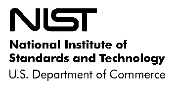
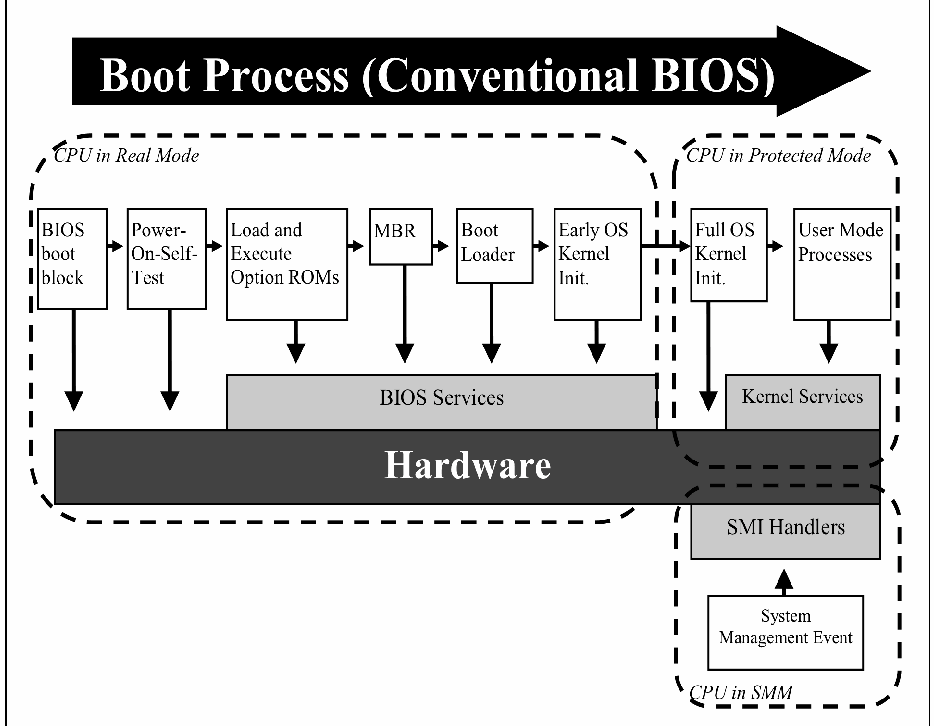
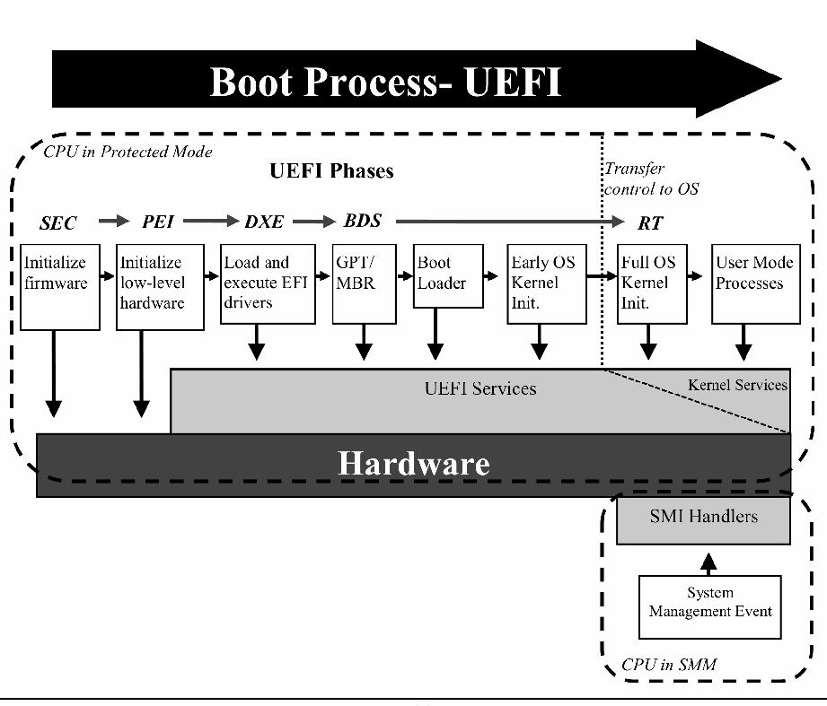

NIST Special Publication · PDF 原文抽出
BIOS Protection Guidelines
BIOS保護ガイドライン
NIST SP 800-147（BIOS Protection Guidelines）の英文と日本語訳を段落ごとに並べた閲覧用ページです。PCクライアントシステムのBIOSファームウェアが不正に改変されるのを防ぐため、更新の認証、完全性保護、管理の推奨事項を示します。 翻訳は非公式です。要件の確認にはNIST の正式版 PDFを参照してください。
PDF から抽出した原文は原本との照合待ちです。

Special Publication 800-147
特別刊行物800-147
BIOS Protection Guidelines
BIOS保護ガイドライン
Recommendations of the National Institute of Standards and Technology
米国国立標準技術研究所の勧告
David Cooper
William Polk
Andrew Regenscheid
Murugiah Souppaya
デビッド・クーパー
ウィリアム・ポーク
アンドリュー・リージェンシャイド
ムルギア・スッパヤ
BIOS Protection Guidelines
BIOS保護ガイドライン
NIST Special Publication 800-147
NIST特別刊行物800-147
Recommendations of the National Institute of Standards and Technology
米国国立標準技術研究所の勧告
David Cooper
William Polk
Andrew Regenscheid
Murugiah Souppaya
デビッド・クーパー
ウィリアム・ポーク
アンドリュー・リージェンシャイド
ムルギア・スッパヤ
COMPUTER SECURITY
コンピュータセキュリティ
Computer Security Division
Information Technology Laboratory
National Institute of Standards and Technology
Gaithersburg, MD 20899-8930
コンピュータセキュリティ部門
情報技術研究所
米国国立標準技術研究所
メリーランド州ゲイザースバーグ 20899-8930
April 2011
2011年4月
U.S. Department of Commerce
米国商務省
Gary Locke, Secretary
ゲイリー・ロック長官
National Institute of Standards and Technology
米国国立標準技術研究所
Dr. Patrick D. Gallagher, Director
パトリック・D・ギャラガー博士、所長
Reports on Computer Systems Technology
コンピュータシステム技術報告書
The Information Technology Laboratory (ITL) at the National Institute of Standards and Technology (NIST) promotes the U.S. economy and public welfare by providing technical leadership for the nation’s measurement and standards infrastructure. ITL develops tests, test methods, reference data, proof of concept implementations, and technical analysis to advance the development and productive use of information technology. ITL’s responsibilities include the development of technical, physical, administrative, and management standards and guidelines for the cost-effective security and privacy of sensitive unclassified information in Federal computer systems. This Special Publication 800-series reports on ITL’s research, guidance, and outreach efforts in computer security and its collaborative activities with industry, government, and academic organizations.
米国国立標準技術研究所（NIST）の情報技術研究所（ITL）は、国の計測・標準基盤に対して技術的リーダーシップを提供することにより、米国の経済と公共の福祉を促進している。ITLは、情報技術の発展と生産的な利用を進めるため、試験、試験方法、参照データ、概念実証の実装、技術分析を開発する。ITLの責任には、連邦政府のコンピュータシステムにおける機微な非機密情報の費用対効果の高いセキュリティとプライバシーのための、技術的、物理的、管理的および運用管理上の標準とガイドラインの策定が含まれる。本特別刊行物800シリーズは、コンピュータセキュリティにおけるITLの研究、指針、普及活動、ならびに産業界、政府、学術機関との協力活動について報告する。
National Institute of Standards and Technology Special Publication 800-147 Natl. Inst. Stand. Technol. Spec. Publ. 800-147, 27 pages (April 2011)
米国国立標準技術研究所 特別刊行物800-147 Natl. Inst. Stand. Technol. Spec. Publ. 800-147、27ページ（2011年4月）
Certain commercial entities, equipment, or materials may be identified in this document in order to describe an experimental procedure or concept adequately. Such identification is not intended to imply recommendation or endorsement by the National Institute of Standards and Technology, nor is it intended to imply that the entities, materials, or equipment are necessarily the best available for the purpose.
実験手順や概念を適切に説明するため、特定の商業組織、機器または材料を本書で特定することがある。こうした特定は、米国国立標準技術研究所による推奨または承認を意味するものではなく、また、当該組織、材料または機器がその目的に対して入手可能な最良のものであると必ずしも意味するものでもない。
Acknowledgments
謝辞
The authors, David Cooper, William Polk, Andrew Regenscheid, and Murugiah Souppaya of the National Institute of Standards and Technology (NIST) wish to thank their colleagues who reviewed drafts of this document and contributed to its technical content. The authors gratefully acknowledge and appreciate the contributions from individuals and organizations that submitted comments on the public draft of this publication. The comments and suggestions helped to improve the overall quality of the document.
著者である米国国立標準技術研究所（NIST）のデビッド・クーパー、ウィリアム・ポーク、アンドリュー・リージェンシャイド、ムルギア・スッパヤは、本書の草案を査読し、技術的内容に貢献した同僚に謝意を表する。また、本刊行物の公開草案にコメントを寄せた個人および組織の貢献に、著者一同、深く感謝する。寄せられたコメントや提案は、本書全体の品質向上に役立った。
In addition, the authors would also like to thank Gustavo Duarte, who created an earlier diagram of the boot-up process that was used as the basis for Figures 1 and 2 in this document.
さらに、著者らは、本書の図1および図2の基礎として使用した、ブートアップ処理の以前の図を作成したグスタボ・ドゥアルテにも謝意を表する。
Table of Contents
目次
Executive Summary — 1
要約 — 1
1. Introduction.......................................................................................................................1-1
1. はじめに.......................................................................................................................1-1
1.1 Authority ...................................................................................................................1-1
1.1 権限......................................................................................................................1-1
1.2 Purpose and Scope..................................................................................................1-1
1.2 目的と適用範囲..................................................................................................1-1
1.3 Audience ..................................................................................................................1-2
1.3 対象読者..............................................................................................................1-2
1.4 Document Structure .................................................................................................1-2
1.4 文書の構成..........................................................................................................1-2
2. Background.......................................................................................................................2-1
2. 背景...............................................................................................................................2-1
2.1 System BIOS............................................................................................................2-1
2.1 システムBIOS......................................................................................................2-1
2.2 Role of System BIOS in the Boot Process ...............................................................2-1
2.2 ブート処理におけるシステムBIOSの役割......................................................2-1
2.2.1 Conventional BIOS Boot Process.................................................................2-2
2.2.1 従来型BIOSのブート処理.......................................................................2-2
2.2.2 UEFI Boot Process .......................................................................................2-4
2.2.2 UEFIのブート処理....................................................................................2-4
2.3 Updating the System BIOS ......................................................................................2-5
2.3 システムBIOSの更新........................................................................................2-5
2.4 Importance of BIOS Integrity....................................................................................2-5
2.4 BIOSの完全性の重要性....................................................................................2-5
2.5 Threats to the System BIOS.....................................................................................2-6
2.5 システムBIOSへの脅威....................................................................................2-6
3. Threat Mitigation...............................................................................................................3-1
3. 脅威の緩和...................................................................................................................3-1
3.1 Security Guidelines for System BIOS Implementations ...........................................3-1
3.1 システムBIOS実装に関するセキュリティガイドライン..............................3-1
3.1.1 BIOS Update Authentication.........................................................................3-1
3.1.1 BIOS更新の認証........................................................................................3-1
3.1.2 Secure Local Update ....................................................................................3-2
3.1.2 セキュアなローカル更新..........................................................................3-2
3.1.3 Integrity Protection........................................................................................3-2
3.1.3 完全性の保護............................................................................................3-2
3.1.4 Non-Bypassability.........................................................................................3-3
3.1.4 バイパス不可能性....................................................................................3-3
3.2 Recommended Practices for BIOS Management.....................................................3-3
3.2 BIOS管理の推奨事項........................................................................................3-3
List of Appendices
付録一覧
Appendix A— Summary of Guidelines for System BIOS Implementations ......................A-1
付録A—システムBIOS実装に関するガイドラインの要約..................................A-1
Appendix B— Glossary ..........................................................................................................B-1
付録B—用語集..............................................................................................................B-1
Appendix C— Acronyms and Abbreviations........................................................................C-1
付録C—頭字語および略語..........................................................................................C-1
Appendix D— References ......................................................................................................D-1
付録D—参考文献..........................................................................................................D-1
Executive Summary
要約
Modern computers rely on fundamental system firmware, commonly known as the system Basic Input/Output System (BIOS), to facilitate the hardware initialization process and transition control to the operating system. The BIOS is typically developed by both original equipment manufacturers (OEMs) and independent BIOS vendors, and is distributed to end-users by motherboard or computer manufacturers. Manufacturers frequently update system firmware to fix bugs, patch vulnerabilities, and support new hardware. This document provides security guidelines for preventing the unauthorized modification of BIOS firmware on PC client systems.
現代のコンピュータは、一般にシステム基本入出力システム（BIOS）と呼ばれる基盤的なシステムファームウェアを利用して、ハードウェアを初期化し、制御をオペレーティングシステムへ移す。BIOSは通常、相手先ブランド製造業者（OEM）と独立系BIOSベンダーの双方が開発し、マザーボードまたはコンピュータの製造業者がエンドユーザーに提供する。製造業者は、バグ修正、脆弱性へのパッチ適用、新しいハードウェアへの対応のため、システムファームウェアを頻繁に更新する。本書は、PCクライアントシステム上のBIOSファームウェアが不正に改変されることを防ぐためのセキュリティガイドラインを示す。
Unauthorized modification of BIOS firmware by malicious software constitutes a significant threat because of the BIOS’s unique and privileged position within the PC architecture. A malicious BIOS modification could be part of a sophisticated, targeted attack on an organization—either a permanent denial of service (if the BIOS is corrupted) or a persistent malware presence (if the BIOS is implanted with malware). The move from conventional BIOS implementations to implementations based on the Unified Extensible Firmware Interface (UEFI) may make it easier for malware to target the BIOS in a widespread fashion, as these BIOS implementations are based on a common specification.
悪意あるソフトウェアによるBIOSファームウェアの不正改変は、PCアーキテクチャにおけるBIOSの固有かつ特権的な位置付けから、重大な脅威となる。悪意あるBIOS改変は、組織に対する高度な標的型攻撃の一部となり得る。すなわち、恒久的なサービス拒否（BIOSが破損した場合）、または持続的なマルウェアの存在（BIOSにマルウェアが埋め込まれた場合）のいずれかである。従来型のBIOS実装から統一拡張ファームウェア・インターフェース（UEFI）に基づく実装への移行により、マルウェアがBIOSを広範囲に標的とすることが容易になる可能性がある。これらのBIOS実装は共通の仕様に基づいているためである。
This document focuses on current and future x86 and x64 desktop and laptop systems, although the controls and procedures could potentially apply to any system design. Likewise, although the guide is oriented toward enterprise-class platforms, the necessary technologies are expected to migrate to consumer-grade systems over time. The security guidelines do not attempt to prevent installation of unauthentic BIOSs through the supply chain, by physical replacement of the BIOS chip, or through secure local update procedures.
本書は現在および将来のx86・x64デスクトップおよびノートPCを対象とするが、管理策と手順はあらゆるシステム設計に適用できる可能性がある。また、本ガイドはエンタープライズ向けプラットフォームを中心に扱うものの、必要な技術は今後、コンシューマー向けシステムにも普及すると見込まれる。本セキュリティガイドラインは、サプライチェーンを通じた真正でないBIOSの導入、BIOSチップの物理的な交換、またはセキュアなローカル更新手順による導入を防ぐことを目的としていない。
Security guidelines are specified for four system BIOS features:
システムBIOSの次の4つの機能について、セキュリティガイドラインを定める。
•The authenticated BIOS update mechanism, where digital signatures prevent the installation of BIOS update images that are not authentic.
•認証済みBIOS更新メカニズム：デジタル署名により、真正でないBIOS更新イメージのインストールを防止する。
•An optional secure local update mechanism, where physical presence authorizes installation of BIOS update images.
•任意のセキュアなローカル更新メカニズム：物理的な立会いを条件として、BIOS更新イメージのインストールを許可する。
•Integrity protection features, to prevent unintended or malicious modification of the BIOS outside the authenticated BIOS update process.
•完全性保護機能：認証済みBIOS更新プロセス以外で、BIOSが意図せず、または悪意をもって改変されることを防ぐ。
•Non-bypassability features, to ensure that there are no mechanisms that allow the system processor or any other system component to bypass the authenticated update mechanism.
•バイパス不可能性機能：システムプロセッサーやその他のシステム構成要素が認証済み更新メカニズムを迂回できる手段が存在しないことを保証する。
Additionally, management best practices which complement the security guidelines are presented. Five distinct phases are addressed:
さらに、セキュリティガイドラインを補完する管理のベストプラクティスを示し、次の5つの段階を扱う。
•The Provisioning Phase, which establishes configuration baselines identifying the approved BIOS version and configuration settings.
•プロビジョニング段階：承認済みBIOSのバージョンと構成設定を識別する構成ベースラインを確立する。
•The Platform Deployment Phase, which establishes or verifies the configuration baseline using a secure local update mechanism.
•プラットフォーム展開段階：セキュアなローカル更新メカニズムを使用して構成ベースラインを確立または検証する。
•The Operations and Maintenance Phase, where systems are monitored for unexpected changes and planned BIOS updates are executed using the authenticated BIOS update mechanism.
•運用・保守段階：予期しない変更がないかシステムを監視し、計画されたBIOS更新を認証済みBIOS更新メカニズムで実施する。
•The Recovery Phase, which supports authorized rollback to an earlier BIOS version and recovery from a corrupted BIOS.
•復旧段階：以前のBIOSバージョンへの承認されたロールバックと、破損したBIOSからの復旧を支援する。
•The Disposition Phase, where the BIOS and configuration data are restored to their original settings to prevent against accidental information leakage.
•廃棄段階：偶発的な情報漏えいを防ぐため、BIOSと構成データを元の設定に戻す。
Future revisions to this publication will also address the security of critical system firmware that interact with the BIOS.
本刊行物の将来の改訂では、BIOSと連携する重要なシステムファームウェアのセキュリティも扱う予定である。
ES-1
ES-1
1. Introduction
1. はじめに
1.1 Authority
1.1 権限
The National Institute of Standards and Technology (NIST) developed this document in furtherance of its statutory responsibilities under the Federal Information Security Management Act (FISMA) of 2002, Public Law 107-347.
米国国立標準技術研究所（NIST）は、2002年連邦情報セキュリティマネジメント法（FISMA）、公法107-347に基づく法定責務を遂行するため、本書を作成した。
NIST is responsible for developing standards and guidelines, including minimum requirements, for providing adequate information security for all agency operations and assets; but such standards and guidelines shall not apply to national security systems. This guideline is consistent with the requirements of the Office of Management and Budget (OMB) Circular A-130, Section 8b(3), “Securing Agency Information Systems,” as analyzed in A-130, Appendix IV: Analysis of Key Sections. Supplemental information is provided in A-130, Appendix III.
NISTは、各機関のすべての業務と資産に適切な情報セキュリティを確保するため、最低要件を含む標準およびガイドラインを策定する責任を負う。ただし、これらの標準およびガイドラインは国家安全保障システムには適用されない。本ガイドラインは、行政管理予算局（OMB）通達A-130第8b(3)節「政府機関情報システムの保護」の要件と整合しており、その分析はA-130付録IV「主要節の分析」に示されている。補足情報はA-130付録IIIに記載されている。
This guideline has been prepared for use by Federal agencies. It may be used by nongovernmental organizations on a voluntary basis and is not subject to copyright, though attribution is desired.
本ガイドラインは連邦政府機関向けに作成された。非政府組織も任意で利用でき、著作権の対象ではないが、出典の明記が望まれる。
Nothing in this document should be taken to contradict standards and guidelines made mandatory and binding on Federal agencies by the Secretary of Commerce under statutory authority, nor should these guidelines be interpreted as altering or superseding the existing authorities of the Secretary of Commerce, Director of the OMB, or any other Federal official.
本書のいかなる内容も、法的権限に基づいて商務長官が連邦政府機関に対して義務的かつ拘束力のあるものとした標準およびガイドラインに反するものと解釈すべきではない。また、本ガイドラインを、商務長官、OMB長官、その他いかなる連邦政府職員の既存の権限を変更するもの、またはそれに取って代わるものと解釈すべきでもない。
1.2 Purpose and Scope
1.2 目的と適用範囲
This document provides guidelines for preventing the unauthorized modification of Basic Input/Output System (BIOS) firmware on PC client systems. Unauthorized modification of BIOS firmware by malicious software constitutes a significant threat because of the BIOS’s unique and privileged position within the PC architecture. A malicious BIOS modification could be part of a sophisticated, targeted attack on an organization —either a permanent denial of service (if the BIOS is corrupted) or a persistent malware presence (if the BIOS is implanted with malware).
本書は、PCクライアントシステム上の基本入出力システム（BIOS）ファームウェアが不正に改変されることを防ぐためのガイドラインを示す。悪意あるソフトウェアによるBIOSファームウェアの不正改変は、PCアーキテクチャにおけるBIOSの固有かつ特権的な位置付けから、重大な脅威となる。悪意あるBIOS改変は、組織に対する高度な標的型攻撃の一部となり得る。すなわち、恒久的なサービス拒否（BIOSが破損した場合）、または持続的なマルウェアの存在（BIOSにマルウェアが埋め込まれた場合）のいずれかである。
As used in this publication, the term BIOS refers to conventional BIOS, Extensible Firmware Interface (EFI) BIOS, and Unified Extensible Firmware Interface (UEFI) BIOS. This document applies to system BIOS firmware (e.g., conventional BIOS or UEFI BIOS) stored in the system flash memory of computer systems, including portions that may be formatted as Option ROMs. However, it does not apply to Option ROMs, UEFI drivers, and firmware stored elsewhere in a computer system.
本刊行物では、BIOSという用語は従来型BIOS、拡張可能ファームウェア・インターフェース（EFI）BIOS、および統一拡張ファームウェア・インターフェース（UEFI）BIOSを指す。本書は、コンピュータシステムのシステムフラッシュメモリに格納されたシステムBIOSファームウェア（従来型BIOSまたはUEFI BIOSなど）に適用され、これにはオプションROMとしてフォーマットされている場合がある部分も含まれる。ただし、オプションROM、UEFIドライバー、およびコンピュータシステム内の別の場所に格納されたファームウェアには適用されない。
Section 3.1 of this guide provides platform vendors with recommendations and guidelines for a secure BIOS update process. Additionally, Section 3.2 provides recommendations for managing the BIOS in an operational environment. Future revisions to this publication will also address the security of critical system firmware that interact with the BIOS.
本ガイドの3.1節では、プラットフォームベンダー向けに、セキュアなBIOS更新プロセスに関する推奨事項とガイドラインを示す。さらに3.2節では、運用環境でBIOSを管理するための推奨事項を示す。本刊行物の将来の改訂では、BIOSと連携する重要なシステムファームウェアのセキュリティも扱う予定である。
While this document focuses on current and future x86 and x64 client platforms, the controls and procedures are independent of any particular system design. Likewise, although the guide is oriented toward enterprise-class platforms, the necessary technologies are expected to migrate to consumer-grade systems over time. Future efforts may look at boot firmware security for enterprise server platforms.
本書は現在および将来のx86・x64クライアントプラットフォームを対象とするが、管理策と手順は特定のシステム設計に依存しない。また、本ガイドはエンタープライズ向けプラットフォームを中心に扱うものの、必要な技術は今後、コンシューマー向けシステムにも普及すると見込まれる。将来の取り組みでは、エンタープライズサーバープラットフォームのブートファームウェアのセキュリティも検討する可能性がある。
1.3 Audience
1.3 対象読者
The intended audience for this document includes BIOS and platform vendors, and information system security professionals who are responsible for managing the endpoint platforms’ security, secure boot processes, and hardware security modules. The material may also be of use when developing enterprise-wide procurement strategies and deployment.
本書の対象読者は、BIOSおよびプラットフォームのベンダー、ならびにエンドポイントプラットフォームのセキュリティ、セキュアブート処理、ハードウェアセキュリティモジュールの管理を担当する情報システムセキュリティ専門家である。また、組織全体の調達戦略や展開計画を策定する際にも、本書の内容が役立つ場合がある。
The material in this document is technically oriented, and it is assumed that readers have at least a basic understanding of system and network security. The document provides background information to help such readers understand the topics that are discussed. Readers are encouraged to take advantage of other resources (including those listed in this document) for more detailed information.
本書は技術的な内容を扱うため、読者がシステムおよびネットワークセキュリティについて少なくとも基本的な知識を有していることを前提とする。本書では、扱うトピックを理解するための背景情報を示す。読者は、より詳しい情報を得るため、本書に記載されたものを含む他の資料も活用されたい。
1.4 Document Structure
1.4 文書の構成
The remainder of this document is organized into the following major sections:
本書の残りの部分は、次の主要な節で構成される。
•Section 2 presents an overview of the BIOS and its role in the boot process, and identifies potential attacks against the BIOS in an operational environment.
•2節では、BIOSとブート処理におけるその役割を概説し、運用環境でBIOSに対して想定される攻撃を示す。
•Section 3 examines how selected threats to the BIOS can be mitigated. Section 3.1 describes security controls for BIOS implementations that are required or recommended to mitigate these threats. Section 3.2 defines processes that leverage these controls to implement a secure BIOS update process within an enterprise as part of the platform management life cycle.
•3節では、BIOSへの特定の脅威をどのように緩和できるかを検討する。3.1節では、これらの脅威を緩和するために必要または推奨されるBIOS実装のセキュリティ管理策を説明する。3.2節では、これらの管理策を活用して、プラットフォーム管理ライフサイクルの一環として、企業内にセキュアなBIOS更新プロセスを実装するための手順を定める。
The document also contains appendices with supporting material:
本書には、補足資料を収めた付録も含まれる。
•Appendix A contains a summary of the security guidelines for system BIOS implementations.
•付録Aには、システムBIOS実装に関するセキュリティガイドラインの要約を示す。
•Appendix B defines terms used in this document.
•付録Bでは、本書で使用する用語を定義する。
•Appendix C contains a list of acronyms and abbreviations used in this document.
•付録Cには、本書で使用する頭字語および略語の一覧を示す。
•Appendix D contains a list of references used in the development of this document.
•付録Dには、本書の作成に使用した参考文献の一覧を示す。
2. Background
2. 背景
Modern computers such as desktop and laptop computers contain program code that facilitates the hardware initialization process. The code is stored in non-volatile memory and is commonly referred to as boot firmware. The primary firmware used to initialize the system is called the Basic Input/Output System (BIOS) or the system BIOS. This section provides background information on the system BIOS and its role in the boot process using the conventional BIOS and Unified Extensible Firmware Interface (UEFI) BIOS as examples. It identifies the primary methods used for updating the system BIOS, and security issues and threats to the system BIOS.
デスクトップやノートPCなどの現代のコンピュータには、ハードウェアの初期化プロセスを支援するプログラムコードが含まれている。このコードは不揮発性メモリに保存され、一般にブートファームウェアと呼ばれる。システムの初期化に使用される主要なファームウェアは、基本入出力システム（BIOS）またはシステムBIOSと呼ばれる。本節では、従来型BIOSと統一拡張ファームウェア・インターフェース（UEFI）BIOSを例に、システムBIOSとブート処理におけるその役割についての背景情報を示す。また、システムBIOSの主な更新方法、ならびにシステムBIOSに関するセキュリティ上の問題と脅威を示す。
2.1 System BIOS
2.1 システムBIOS
The system BIOS is the first piece of software executed on the main central processing unit (CPU) when a computer is powered on. While the system BIOS was originally responsible for providing operating systems access to hardware, its primary role on modern machines is to initialize and test hardware components and load the operating system. In addition, the BIOS loads and initializes important system management functions, such as power and thermal management. The system BIOS may also load CPU microcode patches during the boot process.
システムBIOSは、コンピュータの電源を入れたときにメイン中央処理装置（CPU）で最初に実行されるソフトウェアである。システムBIOSは当初、オペレーティングシステムがハードウェアにアクセスする手段を提供していたが、現代のコンピュータでの主な役割は、ハードウェア構成要素を初期化・試験してオペレーティングシステムを読み込むことである。また、BIOSは電源管理や熱管理など、重要なシステム管理機能を読み込み、初期化する。システムBIOSは、ブート処理中にCPUマイクロコードのパッチを読み込むこともある。
There are several different types of BIOS firmware. Some computers use a16-bit conventional BIOS, while many newer systems use boot firmware based on the UEFI specifications [UEFI]. In this document we refer to all types of boot firmware as BIOS firmware, the system BIOS, or simply BIOS. When necessary, we differentiate conventional BIOS firmware from UEFI firmware by calling them the conventional BIOS and UEFI BIOS, respectively.
BIOSファームウェアにはいくつかの種類がある。16ビットの従来型BIOSを使用するコンピュータもあれば、UEFI仕様[UEFI]に基づくブートファームウェアを使用する新しいシステムも多い。本書では、あらゆる種類のブートファームウェアをBIOSファームウェア、システムBIOS、または単にBIOSと呼ぶ。必要に応じて、従来型BIOSファームウェアとUEFIファームウェアを、それぞれ従来型BIOSおよびUEFI BIOSと呼び分ける。
System BIOS is typically developed by both original equipment manufacturers (OEMs) and independent BIOS vendors, and is distributed to end users with computer hardware. Manufacturers frequently update system firmware to fix bugs, patch vulnerabilities, and support new hardware. The system BIOS is typically stored on electrically erasable programmable read-only memory (EEPROM) or other forms of flash memory, and is modifiable by end users. Typically, system BIOS firmware is updated using a utility or tool that has special knowledge of the non-volatile storage components in which the BIOS is stored.
システムBIOSは通常、相手先ブランド製造業者（OEM）と独立系BIOSベンダーの双方が開発し、コンピュータハードウェアとともにエンドユーザーへ提供する。製造業者は、バグ修正、脆弱性へのパッチ適用、新しいハードウェアへの対応のため、システムファームウェアを頻繁に更新する。システムBIOSは通常、電気的消去可能プログラマブル読み出し専用メモリ（EEPROM）またはその他のフラッシュメモリに保存され、エンドユーザーが変更できる。一般に、BIOSを格納する不揮発性ストレージ構成要素に関する特別な知識を備えたユーティリティまたはツールを使用して、システムBIOSファームウェアを更新する。
A given computer system can have BIOS in several different locations. In addition to the motherboard, BIOS can be found on hard drive controllers, video cards, network cards and other add-in cards. This additional firmware generally takes the form of Option ROMs (containing conventional BIOS and/or UEFI drivers). These are loaded and executed by the system firmware during the boot process. Other system devices, such as hard drives and optical drives, may have their own microcontrollers and other types of firmware.
コンピュータシステム内では、BIOSが複数の場所に存在することがある。マザーボードのほか、ハードディスクコントローラー、ビデオカード、ネットワークカード、その他の拡張カードにもBIOSが含まれる場合がある。こうした追加ファームウェアは通常、オプションROM（従来型BIOSおよび／またはUEFIドライバーを含む）の形をとり、ブート処理中にシステムファームウェアによって読み込まれ、実行される。ハードディスクや光学ドライブなどのその他のシステムデバイスにも、独自のマイクロコントローラーや別種のファームウェアが備わっている場合がある。
As noted in Section 1.2, the guidelines in this document apply BIOS firmware stored in the system flash. This includes Option ROMs and UEFI drivers that are stored with the system BIOS firmware and are updated by the same mechanism. It does not apply to Option ROMs, UEFI drivers, and firmware stored elsewhere in a computer system.
1.2節で述べたとおり、本書のガイドラインはシステムフラッシュに格納されたBIOSファームウェアに適用される。これには、システムBIOSファームウェアとともに格納され、同じメカニズムで更新されるオプションROMおよびUEFIドライバーが含まれる。コンピュータシステム内の別の場所に格納されたオプションROM、UEFIドライバーおよびファームウェアには適用されない。
2.2 Role of System BIOS in the Boot Process
2.2 ブート処理におけるシステムBIOSの役割
The primary function of the system BIOS is to initialize important hardware components and to load the operating system. This process is known as booting. The boot process of the system BIOS typically executes in the following stages:
システムBIOSの主な機能は、重要なハードウェア構成要素を初期化してオペレーティングシステムを読み込むことである。この処理をブートという。システムBIOSのブート処理は通常、次の段階を順に実行する。
1.Execute Core Root of Trust: The system BIOS may include a small core block of firmware that executes first and is capable of verifying the integrity of other firmware components. This has traditionally been called the BIOS Boot Block. For trusted computing applications, it may also contain the Core Root of Trust for Measurement (CRTM).
1.コア・ルート・オブ・トラストの実行：システムBIOSには、最初に実行され、他のファームウェア構成要素の完全性を検証できる小さなコア・ファームウェアブロックが含まれる場合がある。従来、これはBIOSブートブロックと呼ばれてきた。トラステッド・コンピューティングの用途では、計測のコア・ルート・オブ・トラスト（CRTM）も含まれる場合がある。
2.Initialize and Test Low-Level Hardware: Very early in the boot process the system BIOS initializes and tests key pieces of hardware on the computer system, including the motherboard, chipset, memory and CPU.
2.低レベルハードウェアの初期化と試験：ブート処理のごく初期に、システムBIOSは、マザーボード、チップセット、メモリ、CPUなど、コンピュータシステムの主要なハードウェアを初期化して試験する。
3.Load and Execute Additional Firmware Modules: The system BIOS executes additional pieces of firmware that either extend the capabilities of the system BIOS or initialize other hardware components necessary for booting the system. These additional modules may be stored within the same flash memory as the system BIOS or they may be stored in the hardware devices they initialize (e.g., video card, local area network card).
3.追加ファームウェアモジュールの読み込みと実行：システムBIOSは、システムBIOSの機能を拡張するか、システムのブートに必要な他のハードウェア構成要素を初期化するための追加ファームウェアを実行する。こうした追加モジュールは、システムBIOSと同じフラッシュメモリに保存されることも、初期化対象のハードウェアデバイス（ビデオカードやローカルエリアネットワークカードなど）に保存されることもある。
4.Select Boot Device: After system hardware has been configured, the system BIOS searches for a boot device (e.g., hard drive, optical drive, USB drive) and executes the boot loader stored on that device.
4.ブートデバイスの選択：システムハードウェアの構成後、システムBIOSはブートデバイス（ハードディスク、光学ドライブ、USBドライブなど）を検索し、そのデバイスに保存されたブートローダーを実行する。
5.Load Operating System: While the system BIOS is still in control of the computer, the boot loader begins to load and initialize the operating system kernel. Once the kernel is functional, primary control of the computer system transfers from the system BIOS to the operating system.
5.オペレーティングシステムの読み込み：システムBIOSが引き続きコンピュータを制御している間に、ブートローダーがオペレーティングシステムのカーネルの読み込みと初期化を開始する。カーネルが動作可能になると、コンピュータシステムの主な制御がシステムBIOSからオペレーティングシステムに移る。
In addition, the system BIOS loads system management interrupt (SMI) handlers (also known as System Management Mode (SMM) code) and initializes Advanced Configuration and Power Interface (ACPI) tables and code. These provide important system management functions for the running computer system, such as power and thermal management.
さらに、システムBIOSはシステム管理割込み（SMI）ハンドラー（システム管理モード（SMM）コードとも呼ばれる）を読み込み、ACPI（Advanced Configuration and Power Interface）のテーブルとコードを初期化する。これらは、電源管理や熱管理など、重要なシステム管理機能を稼働中のコンピュータシステムに提供する。
This section describes the boot process in conventional BIOS-based systems and the boot process in UEFI-based systems. While conventional BIOS is used in many desktop and laptop computers deployed today, the industry has begun transitioning to UEFI BIOS.
本節では、従来型BIOSベースのシステムとUEFIベースのシステムそれぞれについて、ブート処理を説明する。従来型BIOSは現在稼働中の多くのデスクトップおよびノートPCで使われている一方、業界ではUEFI BIOSへの移行が始まっている。
2.2.1 Conventional BIOS Boot Process
2.2.1 従来型BIOSのブート処理
Figure 1 shows a typical boot process for x86-compatible systems running a conventional BIOS. The conventional BIOS often executes in 16-bit real mode, although some more recent implementations execute in protected mode. Some conventional BIOS-based firmware has a small block of BIOS firmware— known as the BIOS boot block— that is logically separate from the rest of the BIOS. On these computer systems, the boot block is the first firmware executed during the boot process. The boot block is responsible for checking the integrity of the remaining BIOS code, and may provide mechanisms for recovery if the main system BIOS firmware is corrupted. On most trusted computing architectures, the BIOS boot block serves as the computer system’s CRTM because this firmware is implicitly trusted to bootstrap the process of building a measurement chain for subsequent attestation of other firmware and software that is executed on the machine [TCG05].
図1は、従来型BIOSを実行するx86互換システムにおける一般的なブート処理を示す。従来型BIOSは多くの場合、16ビットのリアルモードで実行されるが、比較的新しい実装の中にはプロテクトモードで実行されるものもある。従来型BIOSベースのファームウェアの一部には、BIOSの残りの部分から論理的に分離された小さなBIOSファームウェアブロックが含まれる。これはBIOSブートブロックと呼ばれる。このようなコンピュータシステムでは、ブートブロックがブート処理中に最初に実行されるファームウェアである。ブートブロックは残りのBIOSコードの完全性を確認する責任を負う。また、メインのシステムBIOSファームウェアが破損した場合に復旧する仕組みを提供することもある。ほとんどのトラステッド・コンピューティング・アーキテクチャでは、BIOSブートブロックがコンピュータシステムのCRTMとして機能する。このファームウェアは、マシン上で実行される他のファームウェアおよびソフトウェアを後でアテステーションするための計測の連鎖を構築する処理を起動するものとして、暗黙に信頼されているためである[TCG05]。
The boot block executes the part of the conventional BIOS that initializes most hardware components— the Power-on-Self-Test (POST) code. During POST, key low-level hardware on the computer system is initialized, including the chipset, CPU, and memory. The system BIOS initializes the video card, which may load and execute its own BIOS to initialize graphics processors and memory.
ブートブロックは、従来型BIOSのうち、ほとんどのハードウェア構成要素を初期化する部分、すなわち電源投入時自己診断（POST）コードを実行する。POST中に、チップセット、CPU、メモリなど、コンピュータシステムの主要な低レベルハードウェアが初期化される。システムBIOSはビデオカードを初期化し、そのカードが独自のBIOSを読み込んで実行し、グラフィックスプロセッサーやメモリを初期化する場合がある。

Figure 1: Conventional BIOS Boot Process1
図1：従来型BIOSのブート処理1
Next, the system BIOS searches for other peripherals and microcontrollers, and executes any Option ROMs on these components necessary to initialize them. Option ROMs execute very early in the boot process and can add a variety of features to the boot process. For example, the Option ROM on a network adapter could load the Preboot Execution Environment (PXE), which allows a computer to boot over the network.
次に、システムBIOSは他の周辺機器やマイクロコントローラーを検索し、それらの構成要素上にあるオプションROMのうち、その初期化に必要なものをすべて実行する。オプションROMはブート処理のごく初期に実行され、ブート処理にさまざまな機能を追加できる。例えば、ネットワークアダプターのオプションROMは、ネットワーク経由でコンピュータをブートできるようにするプリブート実行環境（PXE）を読み込む場合がある。
Next, the system BIOS scans the computer system for storage devices that have been identified as boot devices. In a typical case, the BIOS attempts to boot from the first boot device it finds that has a valid master boot record (MBR). The MBR points to a boot loader stored on the hard drive, which in turn starts the process of loading the operating system.
次に、システムBIOSはコンピュータシステムを走査し、ブートデバイスとして指定されたストレージデバイスを探す。一般的には、有効なマスターブートレコード（MBR）がある最初のブートデバイスからBIOSが起動を試みる。MBRはハードディスク上のブートローダーを指し、そのブートローダーがオペレーティングシステムの読み込みを開始する。
During the boot process the system BIOS loads SMI handlers and initializes ACPI tables and code. SMI handlers run in a special high-privilege mode on the CPU known as System Management Mode, a 32-bit mode that is capable of bypassing many of the hardware security mechanisms of protected mode, such as memory segmentation and page protections.
ブート処理中に、システムBIOSはSMIハンドラーを読み込み、ACPIテーブルとコードを初期化する。SMIハンドラーは、CPU上の特別な高特権モードであるシステム管理モード（SMM）で実行される。SMMは32ビットモードであり、メモリセグメンテーションやページ保護など、プロテクトモードの多くのハードウェアセキュリティ機構を迂回できる。
2.2.2 UEFI Boot Process
2.2.2 UEFIのブート処理
At a high level, the UEFI boot process, shown in Figure 2, follows a similar flow to the conventional BIOS boot process. One difference is that UEFI code runs in 32- or 64-bit protected mode on the CPU, not in 16-bit real mode as is often the case with conventional BIOS. Most UEFI-based platforms start with a small core block of code that has the primary responsibility of authenticating subsequent code executed on the computer system. This is very similar to the role of the boot block in conventional BIOS. This part of the boot process is known as the Security (SEC) phase, and it serves as the core root of trust in the computer system.
概略として、図2に示すUEFIのブート処理は、従来型BIOSのブート処理と同様の流れに従う。相違点の1つは、従来型BIOSでは多くの場合16ビットのリアルモードで実行されるのに対し、UEFIコードはCPUの32ビットまたは64ビットのプロテクトモードで実行されることである。ほとんどのUEFIベースのプラットフォームは、コンピュータシステム上で後続して実行されるコードを認証することを主な責務とする、小さなコアコードブロックから処理を開始する。これは従来型BIOSにおけるブートブロックの役割と非常によく似ている。このブート処理部分はセキュリティ（SEC）段階と呼ばれ、コンピュータシステムにおける信頼のコア・ルートとして機能する。

Figure 2: UEFI BIOS Boot Process
図2：UEFI BIOSのブート処理
The next phase of the UEFI boot process is the Pre-EFI Initialization (PEI) Phase. The PEI phase is intended to initialize key system components, such as the processor, chipset and motherboard. In some cases, the code in the Security Phase and the PEI Phase comprise the core root of trust in a UEFI system.
UEFIブート処理の次の段階は、プリEFI初期化（PEI）段階である。PEI段階は、プロセッサー、チップセット、マザーボードなどの主要なシステム構成要素を初期化することを目的とする。場合によっては、セキュリティ段階とPEI段階のコードが、UEFIシステムにおける信頼のコア・ルートを構成する。
The purpose of the PEI Phase is to prepare the system for the Driver Execution Environment (DXE) phase. The DXE phase is where most system initialization is performed. The firmware executed in this phase is responsible for searching for and executing drivers that provide device support during the boot process, or provide additional features. During this phase the UEFI BIOS may execute conventional option ROMs, which have a similar purpose.
PEI段階の目的は、ドライバー実行環境（DXE）段階に向けてシステムを準備することである。DXE段階では、システムの初期化の大部分が行われる。この段階で実行されるファームウェアは、ブート中にデバイスをサポートするドライバーや追加機能を提供するドライバーを検索し、実行する。この段階で、UEFI BIOSが同様の目的を持つ従来型オプションROMを実行することもある。
The PEI and DXE phases of the UEFI boot process lay the foundation to load an operating system. The final tasks necessary to load an operating system are performed in the Boot Device Selection (BDS) phase. This phase initializes console devices for simple input/output operations on the system. These console devices include local text or graphical interfaces, as well as remote interfaces, such as Telnet or remote displays over HTTP. The BDS phase also loads any additional drivers necessary to manage console or boot devices. Finally, the firmware loads the boot loader from the first MBR or GUID Partition Table (GPT) formatted boot device, and loads the operating system.
UEFIブート処理のPEI段階とDXE段階は、オペレーティングシステムの読み込みの基盤となる。オペレーティングシステムの読み込みに必要な最後の処理は、ブートデバイス選択（BDS）段階で行われる。この段階では、システム上で単純な入出力操作を行うためのコンソールデバイスを初期化する。コンソールデバイスには、ローカルのテキストまたはグラフィカルなインターフェースのほか、TelnetやHTTP経由のリモートディスプレイなどのリモートインターフェースも含まれる。BDS段階では、コンソールデバイスやブートデバイスを管理するために必要な追加ドライバーも読み込む。最後に、ファームウェアは最初のMBR形式またはGUIDパーティションテーブル（GPT）形式のブートデバイスからブートローダーを読み込み、オペレーティングシステムを読み込む。
During the boot process the UEFI BIOS loads SMI handlers and initializes ACPI tables and code.
ブート処理中に、UEFI BIOSはSMIハンドラーを読み込み、ACPIテーブルとコードを初期化する。
The Run Time phase of the UEFI boot process begins when the operating system is ready to take control from the UEFI BIOS. UEFI runtime services are available to the operating system during this phase.
UEFIブート処理のランタイム段階は、オペレーティングシステムがUEFI BIOSから制御を引き継ぐ準備が整ったときに始まる。この段階では、オペレーティングシステムがUEFIランタイムサービスを利用できる。
2.3 Updating the System BIOS
2.3 システムBIOSの更新
A system and its supporting management software and firmware may provide several authorized mechanisms for legitimately updating the system BIOS. These include:
システムと、それを支援する管理ソフトウェアおよびファームウェアは、システムBIOSを正規に更新するための認可済みメカニズムを複数備えている場合がある。次のようなものがある。
1.User-Initiated Updates: System and motherboard manufacturers typically supply end users with utilities capable of updating the system BIOS. Historically, end users booted from external media to perform these updates, but today most manufacturers provide utilities that can update the system BIOS from the user’s normal operating system. Depending on the security mechanisms implemented on the system, these utilities might directly update the system BIOS or they may schedule an update for the next system reboot.
1.ユーザー起動更新：システムおよびマザーボードの製造業者は通常、システムBIOSを更新できるユーティリティをエンドユーザーに提供する。従来、エンドユーザーは外部メディアから起動してこれらの更新を行っていたが、現在ではほとんどの製造業者が、ユーザーが通常利用するオペレーティングシステムからシステムBIOSを更新できるユーティリティを提供している。システムに実装されたセキュリティ機構によっては、これらのユーティリティがシステムBIOSを直接更新する場合と、次回のシステム再起動時に更新するよう予約する場合がある。
2.Managed Updates: A given computer system may have hardware and software-based agents that allow a system administrator to remotely update the system BIOS without direct involvement from the user.
2.管理された更新：コンピュータシステムによっては、ユーザーが直接関与することなくシステム管理者がシステムBIOSをリモートで更新できるようにする、ハードウェアベースおよびソフトウェアベースのエージェントを備えている場合がある。
3.Rollback: System BIOS implementations that authenticate updates before applying them may also check version numbers during the update process. In these cases, the system BIOS may have a special update process for rolling back the installed firmware to an earlier version. For instance, the rollback process might require the physical presence of the user. This mechanism guards against attackers flashing old firmware with known vulnerabilities.
3.ロールバック：更新を適用する前に認証するシステムBIOS実装では、更新処理中にバージョン番号も確認する場合がある。この場合、システムBIOSに、インストール済みファームウェアを以前のバージョンに戻すための特別な更新処理が備わっていることがある。例えば、ロールバック時にユーザーの物理的な立会いを求める場合がある。このメカニズムは、既知の脆弱性を含む古いファームウェアを攻撃者が書き込むことを防ぐ。
4.Manual Recovery: To recover from a corrupt or malfunctioning system BIOS, many computer systems provide mechanisms to allow a user with physical presence during the boot process to replace the current system BIOS with a known good version and configuration.
4.手動復旧：破損した、または誤動作するシステムBIOSから復旧するため、多くのコンピュータシステムは、ブート処理中に物理的に立ち会うユーザーが、現在のシステムBIOSを既知の正常なバージョンおよび構成に置き換えられるようにするメカニズムを備えている。
5.Automatic Recovery: Some computer systems are able to detect when the system BIOS has been corrupted and recover from a backup firmware image stored in a separate storage location from the primary system BIOS (e.g., a second flash memory chip, a hidden partition on a hard drive).
5.自動復旧：一部のコンピュータシステムは、システムBIOSの破損を検知し、メインのシステムBIOSとは別のストレージ場所（2つ目のフラッシュメモリチップやハードディスクの隠しパーティションなど）に保存されたバックアップファームウェアイメージから復旧できる。
2.4 Importance of BIOS Integrity
2.4 BIOSの完全性の重要性
As the first code that is executed by the main CPU, the system BIOS is a critical security component of a computer system. While the system BIOS, possibly with the use of a Trusted Platform Module (TPM), can verify the integrity of firmware and software executed later in the boot process, typically all or part of the system BIOS is implicitly trusted.
メインCPUが最初に実行するコードであるシステムBIOSは、コンピュータシステムの重要なセキュリティ構成要素である。システムBIOSは、トラステッド・プラットフォーム・モジュール（TPM）を使用する場合も含め、ブート処理の後段で実行されるファームウェアやソフトウェアの完全性を検証できるが、通常、システムBIOSの全部または一部は暗黙に信頼されている。
The system BIOS is a potentially attractive target for attack. Malicious code running at the BIOS level could have a great deal of control over a computer system. It could be used to compromise any components that are loaded later in the boot process, including the SMM code, boot loader, hypervisor, and operating system. The BIOS is stored on non-volatile memory that persists between power cycles. Malware written into a BIOS could be used to re-infect machines even after new operating systems have been installed or hard drives replaced. Because the system BIOS runs early in the boot process with very high privileges on the machine, malware running at the BIOS level may be very difficult to detect. Because the BIOS loads first, there is no opportunity for anti-malware products to authoritatively scan the BIOS.
システムBIOSは攻撃にとって魅力的な標的となる可能性がある。BIOSレベルで動作する悪意あるコードは、コンピュータシステムに対して非常に大きな制御権を持ちうる。SMMコード、ブートローダー、ハイパーバイザー、およびオペレーティングシステムなど、ブート処理の後段で読み込まれるあらゆる構成要素を侵害するために使われる可能性がある。BIOSは電源サイクルを経ても内容が保持される不揮発性メモリに保存される。BIOSに書き込まれたマルウェアは、新しいオペレーティングシステムをインストールした後やハードディスクを交換した後であっても、コンピュータを再感染させるために使われる可能性がある。システムBIOSはブート処理の早い段階で非常に高い特権を持って動作するため、BIOSレベルで動作するマルウェアの検出は極めて困難な場合がある。BIOSは最初に読み込まれるため、マルウェア対策製品がBIOSを信頼できる形でスキャンする機会はない。
BIOS exploits would likely be highly system-specific—directed at a specific version of a system BIOS or certain hardware components (e.g., a particular motherboard chipset). In contrast, most malware targets software executing at or above the operating system kernel, where it is easier to develop and can attack larger classes of machines. BIOS-level malware may be more likely employed in targeted attacks on high-value computer systems. The move to UEFI-based BIOS may make it easier for malware to target the BIOS in a widespread fashion, as these BIOS implementations are based on a common specification.
BIOSの脆弱性を悪用する攻撃は、システムに強く依存するもの、すなわち特定のバージョンのシステムBIOSや特定のハードウェア構成要素（特定のマザーボード用チップセットなど）を狙うものになると考えられる。これに対し、ほとんどのマルウェアは、オペレーティングシステムのカーネル以上の層で実行されるソフトウェアを標的とする。その層ではマルウェアを開発しやすく、より多くの種類のコンピュータを攻撃できるからである。BIOSレベルのマルウェアは、高価値のコンピュータシステムを狙う標的型攻撃で使われる可能性のほうが高いと考えられる。UEFIベースBIOSへの移行により、マルウェアがBIOSを広範囲に標的としやすくなる可能性がある。これらのBIOS実装は共通の仕様に基づいているからである。
For the reasons outlined above, there are few known instances of BIOS-level malware. At this time, the only publicly known malware targeting the system BIOS that has infected a significant number of computers is the CIH virus, also known as the Chernobyl virus [Sym02], first discovered in 1998. One element of the payload of this virus attempted to overwrite the BIOS on systems using a specific chipset that was widely deployed at the time. This malware relied on several vulnerabilities that are not present in modern machines.
前述の理由により、BIOSレベルのマルウェアとして知られている事例は少ない。現時点で、相当数のコンピュータに感染した、システムBIOSを標的とする公知のマルウェアは、CIHウイルス（チェルノブイリウイルスとも呼ばれる）[Sym02]だけである。これは1998年に初めて発見された。このウイルスのペイロードの一部は、当時広く使用されていた特定のチップセットを搭載するシステム上でBIOSを上書きしようとした。このマルウェアは、現代のコンピュータには存在しない複数の脆弱性を悪用していた。
Security researchers have demonstrated other potential attacks on conventional BIOS and EFI/UEFI firmware. Proof-of-concept attacks have been demonstrated that allow for the insertion of malicious code into conventional BIOS implementations that permit unsigned updates [SaOr09]. Other researchers have discovered a buffer-overflow vulnerability in the EFI BIOS on a modern platform. Although this EFI BIOS write-protects firmware early in the boot process and only flashes signed updates to firmware, the buffer overflow allowed the researchers to bypass the secure update process by executing an unsigned portion of the firmware update package before write protections were applied [WoTe09].
セキュリティ研究者は、従来型BIOSおよびEFI/UEFIファームウェアに対する他の潜在的な攻撃を実証している。署名のない更新を許可する従来型BIOS実装に悪意あるコードを挿入できる概念実証攻撃が実証されている[SaOr09]。別の研究者は、現代のプラットフォーム上のEFI BIOSにバッファーオーバーフロー脆弱性を発見した。このEFI BIOSはブート処理の早期にファームウェアを書き込み保護し、署名済みの更新のみをファームウェアにフラッシュするが、研究者はこのバッファーオーバーフローにより、書き込み保護が適用される前にファームウェア更新パッケージの署名されていない部分を実行することで、セキュアな更新処理を迂回できた[WoTe09]。
Vulnerabilities such as these could allow attackers to create stealthy malware that operate with very high privileges on a system. The system BIOS loads SMI handlers before passing control of the computer to the operating system. Malicious code written into a BIOS could modify the SMI handlers to create malware that would run in SMM [EmSp08]. This would give the malware unrestricted access to physical memory and peripherals connected to the host machine, and it would be very difficult for software running on the operating system to detect.
このような脆弱性により、攻撃者はシステム上で非常に高い特権を持って動作する、発見されにくいマルウェアを作成できる可能性がある。システムBIOSは、コンピュータの制御をオペレーティングシステムに渡す前にSMIハンドラーを読み込む。BIOSに書き込まれた悪意あるコードは、SMIハンドラーを改変して、SMMで動作するマルウェアを作成する可能性がある[EmSp08]。これによりマルウェアは、物理メモリおよびホストマシンに接続された周辺機器に無制限にアクセスできるようになり、また、オペレーティングシステム上で動作するソフトウェアがこれを検出することは非常に難しくなる。
2.5 Threats to the System BIOS
2.5 システムBIOSへの脅威
The preceding section established the importance of maintaining the integrity of the system BIOS. This section describes some of the various ways that the integrity of the system BIOS can be attacked, and identifies the attacks considered within scope for the security controls and processes specified in Section 3.
前節では、システムBIOSの完全性を維持することの重要性を示した。本節では、システムBIOSの完全性を攻撃しうるさまざまな方法の一部を説明し、3節に定めるセキュリティ管理策およびプロセスの対象範囲内とみなす攻撃を示す。
The first threat to the integrity of the system BIOS comes while the system moves through the supply chain. Supply chain security techniques are out of scope for the security controls specified in this document. Some of the procedures specified in Section 3.2 can, however, be used to identify and remedy systems that have an unapproved system BIOS.
システムBIOSの完全性に対する最初の脅威は、システムがサプライチェーンを移動する間に生じる。サプライチェーンセキュリティの手法は、本書に定めるセキュリティ管理策の適用範囲外である。ただし、3.2節に定める手順の一部を用いて、承認されていないシステムBIOSを搭載したシステムを特定し、是正できる。
Assuming that the system arrives with the manufacturer’s intended system BIOS installed, there are a number of threats to the integrity of the system BIOS during the system’s lifetime:
システムに製造業者が意図したシステムBIOSが搭載された状態で届いたとすると、その後のシステムのライフタイムを通じて、システムBIOSの完全性に対する脅威が複数存在する。
•One of the most difficult threats to prevent is a user-initiated installation of a malicious system BIOS. User-initiated BIOS update utilities are often the primary method for updating the system BIOS. The guidelines included in this document will not prevent users from installing unapproved BIOS images if they have physical access to the computer system. As with supply chain threats, security processes may be able to detect and remediate the unapproved system BIOS, such as initiating a recovery process to restore to an approved BIOS.
•防止が最も難しい脅威の1つは、ユーザーが起動して行う悪意あるシステムBIOSのインストールである。ユーザー起動型のBIOS更新ユーティリティは、多くの場合、システムBIOSを更新する主要な手段である。本書に含まれるガイドラインは、ユーザーがコンピュータシステムに物理的にアクセスできる場合に、未承認のBIOSイメージをインストールすることを防止するものではない。サプライチェーンの脅威の場合と同様に、セキュリティプロセスによって未承認のシステムBIOSを検出し、承認済みBIOSに戻す復旧処理を開始するなどして是正できる場合がある。
•Malware could leverage weak BIOS security controls or exploit vulnerabilities in the system BIOS itself to reflash or modify the system BIOS. General-purpose malicious software is unlikely to include this functionality, but a targeted attack on an organization could be directed towards an organization’s standard system BIOS. The malicious BIOS can be delivered to the system either over a network, or using media. The guidelines presented in this document are designed to prevent these kinds of attack.
•マルウェアは、弱いBIOSセキュリティ管理策を利用するか、システムBIOS自体の脆弱性を悪用して、システムBIOSを再フラッシュしたり改変したりする可能性がある。汎用的な悪意あるソフトウェアがこの機能を備える可能性は低いが、組織を狙う標的型攻撃は、その組織の標準システムBIOSに向けられる可能性がある。悪意あるBIOSは、ネットワーク経由またはメディアを使ってシステムに送り込むことができる。本書に示すガイドラインは、この種の攻撃を防止するよう設計されている。
•Network-based system management tools could also be used to launch an organization-wide attack on system BIOSs. For example, consider an organization-maintained update server for the organization’s deployed system BIOS; a compromised server could push a malicious system BIOS to computer systems across the organization. This is a high-impact attack, but requires either an insider or compromise of an organization’s update process. The guidelines presented in this document are designed to prevent this kind of attack.
•ネットワークベースのシステム管理ツールが、システムBIOSに対する組織全体への攻撃に悪用されることもある。例えば、組織が配備済みシステムBIOS用の更新サーバーを管理しているとする。このサーバーが侵害されると、組織内のコンピュータシステム全体に悪意あるシステムBIOSを配布される可能性がある。影響の大きい攻撃だが、内部関係者が関与するか、組織の更新プロセスが侵害される必要がある。本書のガイドラインは、この種の攻撃を防ぐことを目的とする。
•Any of the preceding mechanisms could be used to rollback to an authentic but vulnerable system BIOS. This is a particularly insidious attack, since the “bad” BIOS is authentic (i.e., shipped by the manufacturer). The security controls specified in the following section are primarily focused on verifying the source and integrity of the system BIOS. This document includes recommended controls for rollback protection.
•前述のいずれの手段も、真正ではあるが脆弱性を含むシステムBIOSへのロールバックに利用される可能性がある。これは、問題のあるBIOS自体は真正であり、製造業者が出荷したものだからこそ、特に巧妙な攻撃である。次節に定めるセキュリティ管理策は、主にシステムBIOSの提供元と完全性の検証に重点を置く。本書では、ロールバック防止のための推奨管理策も示す。
The controls described in the following section are primarily focused on preventing unauthorized modification of the system BIOS by potentially malicious software running on computer systems. Installation of an unapproved system BIOS in the supply chain, by individuals with physical access, or through rollback to an authenticated but vulnerable system BIOS, are not addressed by the controls in Section 3.1, but can be addressed using processes specified in Section 3.2.
次節で説明する管理策は、主に、コンピュータシステム上で動作する悪意ある可能性のあるソフトウェアによるシステムBIOSの不正改変を防止することに重点を置く。サプライチェーン内での、物理的にアクセスできる個人による、または認証済みだが脆弱なシステムBIOSへのロールバックを通じた、未承認システムBIOSのインストールは、3.1節の管理策では扱わないが、3.2節に定めるプロセスを用いて対処できる。
3. Threat Mitigation
3. 脅威の緩和
BIOS is a critical component of a secure system. As the first code executed during the boot process, the system BIOS is implicitly trusted by hardware and software components in a system. The previous section described the system BIOS’s role in the boot process, the system BIOS’s appeal to attackers, and the potential threats resulting in the unauthorized modification of the BIOS. This section presents security guidelines for BIOS implementations and recommended practices for managing BIOSs in an enterprise environment. Section 3.1 provides guidelines for a secure BIOS update process. It is intended for platform vendors designing, implementing, or selecting a system BIOS implementation. While products may not be immediately available, organizations can use these guidelines at input to their procurement processes and begin developing plans to make use of these security features when they are available. Organizations can use the recommended BIOS management practices in Section 3.2 when developing these plans. The recommendations are intended to prevent unauthorized modification of the BIOS.
BIOSはセキュアなシステムの重要な構成要素である。ブート処理で最初に実行されるコードであるため、システムBIOSはシステム内のハードウェアおよびソフトウェア構成要素から暗黙に信頼されている。前節では、ブート処理におけるシステムBIOSの役割、攻撃者にとっての魅力、およびBIOSの不正改変につながる潜在的脅威を説明した。本節では、BIOS実装のセキュリティガイドラインと、企業環境でBIOSを管理するための推奨プラクティスを示す。3.1節は、セキュアなBIOS更新プロセスのガイドラインを示し、システムBIOS実装を設計、実装または選定するプラットフォームベンダーを対象とする。製品がすぐに入手できない場合でも、組織は調達プロセスに本ガイドラインを取り入れ、これらのセキュリティ機能が利用可能になったときの活用計画を策定し始めることができる。組織は、その計画の策定にあたり、3.2節の推奨BIOS管理プラクティスを利用できる。これらの推奨事項は、BIOSの不正改変を防ぐことを目的とする。
3.1 Security Guidelines for System BIOS Implementations
3.1 システムBIOS実装に関するセキュリティガイドライン
This subsection provides guidelines intended to maintain the integrity of the BIOS after it has been provisioned by securing the mechanisms used for updating the BIOS. In particular, this subsection defines guidelines for system BIOS implementations for a secure BIOS update mechanism. A secure BIOS update mechanism includes:
本小節では、BIOSの更新に用いるメカニズムを保護することにより、プロビジョニング後のBIOSの完全性を維持することを目的としたガイドラインを示す。特に、本小節では、セキュアなBIOS更新メカニズムのための、システムBIOS実装に関するガイドラインを定める。セキュアなBIOS更新メカニズムには、次のものが含まれる。
1.a process for verifying the authenticity and integrity of BIOS updates; and
1.BIOS更新の真正性と完全性を検証するプロセス、および
2.a mechanism for ensuring that the BIOS is protected from modification outside of the secure update process.
2.セキュアな更新プロセス以外でBIOSが改変されないよう保護するメカニズム。
Authentication verifies that a BIOS update image was generated by an authentic source and is unaltered. All updates to the system BIOS shall either go through an authenticated BIOS update mechanism as described in Section 3.1.1 or use an optional secure local update mechanism compliant with the guidelines in Section 3.1.2.
認証により、BIOS更新イメージが真正な提供元によって生成され、改変されていないことを検証する。システムBIOSへのすべての更新は、3.1.1節で説明する認証済みBIOS更新メカニズムを経由するか、3.1.2節のガイドラインに適合するオプションのセキュアなローカル更新メカニズムを使用しなければならない。
These guidelines for a secure BIOS update mechanism do not mitigate all risks associated with the system BIOS. Some threats to unauthorized modification of the system BIOS remain. For example, these guidelines do not prevent individuals with physical access to systems from modifying the system BIOS. Nor do they guarantee the absence of vulnerabilities in the system BIOS implementations. The guidelines on the system BIOS should be used in conjunction with organizations’ existing security policies and procedures.
セキュアなBIOS更新メカニズムに関する本ガイドラインは、システムBIOSに関連するすべてのリスクを緩和するものではない。システムBIOSの不正改変に関する脅威は一部残る。例えば、本ガイドラインは、システムに物理的にアクセスできる個人がシステムBIOSを改変することを防止するものではない。また、システムBIOS実装に脆弱性が存在しないことを保証するものでもない。システムBIOSに関するガイドラインは、組織の既存のセキュリティ方針および手順と併せて使用すべきである。
3.1.1 BIOS Update Authentication
3.1.1 BIOS更新の認証
The authenticated BIOS update mechanism employs digital signatures to ensure the authenticity of the BIOS update image. To update the BIOS using the authenticated BIOS update mechanism, there shall be a Root of Trust for Update (RTU) that contains a signature verification algorithm and a key store that includes the public key needed to verify the signature on the BIOS update image. The key store and the signature verification algorithm shall be stored in a protected fashion on the computer system and shall be modifiable only using an authenticated update mechanism or a secure local update mechanism as outlined in Section 3.1.2.
認証済みBIOS更新メカニズムは、デジタル署名を用いてBIOS更新イメージの真正性を保証する。認証済みBIOS更新メカニズムを使用してBIOSを更新するには、署名検証アルゴリズムと、BIOS更新イメージの署名を検証するために必要な公開鍵を含む鍵ストアとを収めた、更新の信頼の起点（RTU）が存在しなければならない。鍵ストアおよび署名検証アルゴリズムは、コンピュータシステム上に保護された形で保存しなければならず、認証済み更新メカニズム、または3.1.2節に概説するセキュアなローカル更新メカニズムを使用した場合にのみ変更可能でなければならない。
The key store in the RTU shall include a public key used to verify the signature on a BIOS update image or include a hash [FIPS 180-3] of the public key if a copy of the public key is provided with the BIOS update image. In the latter case, the update mechanism shall hash the public key provided with the BIOS update image and ensure that it matches a hash which appears in the key store before using the provided public key to verify the signature on the BIOS update image.
RTUの鍵ストアには、BIOS更新イメージの署名検証に使用する公開鍵を含めるか、または、公開鍵のコピーがBIOS更新イメージとともに提供される場合には、その公開鍵のハッシュ[FIPS 180-3]を含めなければならない。後者の場合、更新メカニズムは、BIOS更新イメージとともに提供された公開鍵をハッシュし、提供された公開鍵を使ってBIOS更新イメージの署名を検証する前に、そのハッシュが鍵ストア内にあるハッシュと一致することを確認しなければならない。
BIOS images shall be signed in conformance with NIST SP 800-89, Recommendation for Obtaining Assurances for Digital Signature Applications [SP800-89], using an approved digital signature algorithm as specified in NIST FIPS 186-3, Digital Signature Standard [FIPS186-3], that provides at least 112 bits of security strength, in accordance with NIST SP 800-131A, Transitions: Recommendation for Transitioning the Use of Cryptographic Algorithms and Key Lengths [SP800-131A].
BIOSイメージは、NIST SP 800-131A「移行：暗号アルゴリズムおよび鍵長の使用の移行に関する推奨」[SP800-131A]に従って112ビット以上のセキュリティ強度を提供する、NIST FIPS 186-3「デジタル署名標準」[FIPS186-3]に規定された承認済みデジタル署名アルゴリズムを使用し、NIST SP 800-89「デジタル署名アプリケーションの保証取得に関する推奨」[SP800-89]に適合する形で署名しなければならない。
The update mechanism shall ensure that the BIOS update image has been digitally signed and that the digital signature can be verified using a key in the RTU before updating the BIOS. Recovery mechanisms shall also use the authenticated update mechanism unless the recovery process meets the guidelines for a secure local update. The authenticated update mechanism should prevent the unauthorized rollback of the BIOS to an earlier authentic version that has a known security weakness. This limitation of the rollback mechanism may be accomplished, for example, by verifying that the version number of the BIOS image is larger than the currently installed BIOS image’s version number.
更新メカニズムは、BIOSを更新する前に、BIOS更新イメージがデジタル署名されていること、およびRTU内の鍵を使用してそのデジタル署名を検証できることを確認しなければならない。復旧メカニズムも、復旧プロセスがセキュアなローカル更新のガイドラインを満たす場合を除き、認証済み更新メカニズムを使用しなければならない。認証済み更新メカニズムは、既知のセキュリティ上の弱点がある以前の真正なバージョンへのBIOSの不正なロールバックを防止すべきである。このロールバックの制限は、例えば、BIOSイメージのバージョン番号が現在インストールされているBIOSイメージのバージョン番号より大きいことを検証することで実現してもよい。
Some organizations may wish to assert greater control over BIOS updates in high-security environments. The authenticated update mechanism may be designed to permit organizational control over the update process, where updates to the BIOS or rollbacks of the BIOS to an earlier version are permitted only if the update or rollback has been authorized by the organization. For example, specific BIOS images could be authorized by an organization by countersigning them with an organization-controlled key, which would be verified during the update process.
組織によっては、セキュリティの高い環境においてBIOS更新をより強く管理したい場合がある。認証済み更新メカニズムは、更新プロセスを組織が管理できるように設計してもよい。この場合、BIOSの更新または以前のバージョンへのBIOSのロールバックは、その更新またはロールバックが組織によって認可されている場合にのみ許可される。例えば、組織は、組織が管理する鍵で特定のBIOSイメージに追加署名することによってそれらを認可でき、その署名は更新プロセス中に検証される。
3.1.2 Secure Local Update
3.1.2 セキュアなローカル更新
BIOS implementations may optionally include a secure local update mechanism that updates the system BIOS without using the authenticated update mechanism. The secure local update mechanism, if it is implemented, should be used only to load the first BIOS image or to recover from a corruption of a system BIOS that cannot be fixed using the authenticated update mechanism described in Section 3.1.1. A secure local update mechanism shall ensure the authenticity and integrity of the BIOS update image by requiring physical presence. Further protections may be implemented in the secure local update mechanism by requiring the entry of an administrator password or the unlocking of a physical lock (e.g., a motherboard jumper) before permitting the system BIOS to be updated.
BIOS実装には、認証済み更新メカニズムを使用せずにシステムBIOSを更新する、セキュアなローカル更新メカニズムを任意で含めてもよい。セキュアなローカル更新メカニズムを実装する場合は、最初のBIOSイメージを読み込むとき、または3.1.1節に記載する認証済み更新メカニズムでは修復できないシステムBIOSの破損から復旧するときに限って使用すべきである。セキュアなローカル更新メカニズムは、物理的な立会いを必須とすることによって、BIOS更新イメージの真正性と完全性を保証しなければならない。さらに、システムBIOSの更新を許可する前に、管理者パスワードの入力または物理ロック（例：マザーボードのジャンパー）の解除を求めることで、セキュアなローカル更新メカニズムに追加の保護を実装してもよい。
3.1.3 Integrity Protection
3.1.3 完全性の保護
To prevent unintended or malicious modification of the system BIOS outside the authenticated BIOS update process, the RTU and the system BIOS (excluding configuration data used by the system BIOS that is stored in non-volatile memory) shall be protected from unintended or malicious modification with a mechanism that cannot be overridden outside of an authenticated BIOS update. The protection mechanism shall itself be protected from unauthorized modification.
認証済みBIOS更新プロセス以外でシステムBIOSが意図せず、または悪意をもって改変されることを防ぐため、RTUおよびシステムBIOS（不揮発性メモリに保存された、システムBIOSが使用する構成データを除く）は、認証済みBIOS更新以外では無効化できないメカニズムによって、意図しない改変または悪意ある改変から保護しなければならない。保護メカニズム自体も、不正な改変から保護しなければならない。
The authenticated BIOS update mechanism shall be protected from unintended or malicious modification by a mechanism that is at least as strong as that protecting the RTU and the system BIOS.
認証済みBIOS更新メカニズムは、RTUおよびシステムBIOSを保護するメカニズムと同等以上に強固なメカニズムによって、意図しない改変または悪意ある改変から保護しなければならない。
The protection mechanism shall protect relevant regions of the system flash memory containing the system BIOS prior to executing firmware or software that can be modified without using an authenticated update mechanism or a secure local update mechanism. Protections should be enforced by hardware mechanisms that are not alterable except by an authorized mechanism.
保護メカニズムは、認証済み更新メカニズムまたはセキュアなローカル更新メカニズムを使用せずに変更可能なファームウェアまたはソフトウェアを実行する前に、システムBIOSを含むシステムフラッシュメモリの関連領域を保護しなければならない。保護は、認可されたメカニズムによる場合を除き変更できないハードウェアメカニズムによって強制すべきである。
3.1.4 Non-Bypassability
3.1.4 バイパス不可能性
The authenticated BIOS update mechanism shall be the exclusive mechanism for modifying the system BIOS absent physical intervention through the secure local update mechanism. The design of the system and accompanying system components and firmware shall ensure that there are no mechanisms that allow the system processor or any other system component to bypass the authenticated update mechanism, except for the secure local update mechanism. Any such mechanisms capable of bypassing the authenticated update mechanism could create a vulnerability allowing malicious software to modify the system BIOS or overwrite the system flash with a BIOS image from an illegitimate source.
物理的な介入を伴うセキュアなローカル更新メカニズムを除き、認証済みBIOS更新メカニズムをシステムBIOS変更の唯一の手段としなければならない。システム、その付属構成要素およびファームウェアの設計は、セキュアなローカル更新メカニズムを除き、システムプロセッサーその他のシステム構成要素が認証済み更新メカニズムを迂回する手段を持たないことを保証しなければならない。認証済み更新メカニズムを迂回できる手段があれば、悪意あるソフトウェアがシステムBIOSを改変したり、正当でない提供元のBIOSイメージでシステムフラッシュを上書きしたりする脆弱性につながる可能性がある。
A modern platform includes design features that give system components direct access to the system BIOS for performance improvements, such as shadowing the BIOS in RAM or for system management mode operations. System components may have read access to BIOS flash memory, but they shall not be able to directly modify the system BIOS except through the authenticated update mechanism or by an authorized mechanism requiring physical intervention. For example, bus mastering that bypasses the main processor (e.g., Direct Memory Access to the system flash) shall not be capable of directly modifying the firmware. Also, microcontrollers on the system shall not be capable of directly modifying the firmware, unless the hardware and firmware components of the microcontroller are protected with equivalent mechanisms at the RTU. These non-bypassability guidelines do not apply to configuration data used by the system BIOS that is stored in non-volatile memory.
現代のプラットフォームには、BIOSをRAMにシャドウイングする場合やシステム管理モードの処理など、性能向上のためにシステム構成要素がシステムBIOSへ直接アクセスできるようにする設計機能が含まれる。システム構成要素はBIOSフラッシュメモリへの読み取りアクセスを持ってもよいが、認証済み更新メカニズムによる場合、または物理的介入を要する認可されたメカニズムによる場合を除き、システムBIOSを直接変更できてはならない。例えば、メインプロセッサーを迂回するバスマスタリング（例：システムフラッシュへのダイレクトメモリアクセス）は、ファームウェアを直接変更できてはならない。また、システム上のマイクロコントローラーは、そのマイクロコントローラーのハードウェアおよびファームウェア構成要素がRTUにおけるものと同等のメカニズムで保護されている場合を除き、ファームウェアを直接変更できてはならない。これらのバイパス不可能性に関するガイドラインは、不揮発性メモリに保存された、システムBIOSが使用する構成データには適用されない。
3.2 Recommended Practices for BIOS Management
3.2 BIOS管理の推奨プラクティス
This section introduces considerations for managing system BIOS in an enterprise operational environment leveraging the existing policy, process, and operations practices. It focuses on key activities revolving around provisioning, deploying, managing, and decommissioning the system BIOS as part of its overall platform life cycle. Activities performed in a recovery phase are also specified to handle exceptional conditions.
本節では、既存の方針、プロセスおよび運用プラクティスを活用した、企業の運用環境におけるシステムBIOS管理上の考慮事項を示す。プラットフォームのライフサイクル全体の一部として、システムBIOSのプロビジョニング、展開、管理、廃棄を行う主要な活動に重点を置く。例外的な状況に対処する復旧段階で行う活動も定める。
Provisioning Phase: It is crucial that the organization institute a mechanism for identifying, inventorying, and tracking the different computer systems across the enterprise throughout their life cycle. Identifying and monitoring the BIOS image characteristics such as manufacturer name, version, or time stamp allows the organization to perform update, rollback, and recovery. The organization should maintain a “golden master image” for each approved system BIOS, including superseded versions, in secure offline storage.
プロビジョニング段階：組織は、コンピュータシステムのライフサイクルを通じて、企業全体にあるさまざまなコンピュータシステムを識別、棚卸し、追跡する仕組みを整備することが極めて重要である。製造業者名、バージョン、タイムスタンプなどのBIOSイメージの特性を識別し監視することで、組織は更新、ロールバック、復旧を実施できる。組織は、置き換えられた旧バージョンも含め、承認済みシステムBIOSごとの「ゴールデンマスターイメージ」を、セキュアなオフラインストレージに保管すべきである。
If the platform has a configurable Root of Trust for Update (RTU), the organization needs to maintain a copy of the key store and signature verification algorithm. If the RTU is integrated into the system BIOS then this guideline is satisfied by maintaining the golden BIOS image. If the RTU is not integrated into the system BIOS, the security afforded the RTU should be at least as strong as that for the golden BIOS image.
プラットフォームが構成可能な更新の信頼の起点（RTU）を備える場合、組織は鍵ストアと署名検証アルゴリズムのコピーを保管する必要がある。RTUがシステムBIOSに統合されている場合は、ゴールデンBIOSイメージを保管することでこのガイドラインを満たす。RTUがシステムBIOSに統合されていない場合は、RTUに与えるセキュリティ保護をゴールデンBIOSイメージと同等以上に強固にすべきである。
Most organizations will rely upon the manufacturer as the source for the authenticated BIOS. In this case, the organization does not maintain any private keys, and the RTU contains only public keys provided by the manufacturer. Where the organization prefers to participate actively in the BIOS authentication process by countersigning some or all approved system BIOS updates, the RTU may contain one or more public keys associated with the organization. In this case, the organization must securely maintain the corresponding private key so that the next BIOS update can be signed. Private keys should be maintained under multi-party control to protect against insider attacks. For organizational keys, the corresponding public keys must also be maintained securely (to ensure authentication of origin).
ほとんどの組織は、認証済みBIOSの提供元として製造業者に依存する。この場合、組織は秘密鍵を一切保有せず、RTUには製造業者が提供する公開鍵のみが含まれる。組織が、承認済みシステムBIOS更新の一部またはすべてに追加署名することによってBIOS認証プロセスに積極的に関与することを選ぶ場合、RTUには組織に関連付けられた公開鍵を1つ以上含めてもよい。この場合、組織は、次回のBIOS更新に署名できるよう、対応する秘密鍵を安全に保管しなければならない。内部関係者による攻撃から保護するため、秘密鍵は複数者の管理下で保管すべきである。組織の鍵については、対応する公開鍵も安全に保管しなければならない（発信元の認証を確実にするため）。
In addition, a common configuration baseline for each platform must be created to conform to the organization’s policy. The baseline should ensure that the integrity protection and non-bypassability features are enabled (if they are configurable), and organization policies for password policy and device boot order are enforced. Finally, the BIOS image information and associated baseline of settings for each platform should be documented in the configuration management plan.2
さらに、組織の方針に適合する共通の構成ベースラインをプラットフォームごとに作成しなければならない。このベースラインでは、完全性保護機能とバイパス不可能性機能が構成可能な場合に有効化されていることを確認し、パスワード方針やデバイスの起動順序に関する組織の方針を適用すべきである。最後に、各プラットフォームのBIOSイメージ情報と関連する設定のベースラインを構成管理計画に記録すべきである。2
Platform Deployment Phase: The secure local update process should be used to provision the approved BIOS for that platform from the golden master image, the corresponding RTU should be installed, and BIOS-related configuration parameters established before computer systems are deployed. This will help the organization maintain a consistent, known starting posture. The organization should periodically perform assessments to confirm that the organization’s BIOS policies, processes, and procedures are being followed properly.
プラットフォーム展開段階：コンピュータシステムを展開する前に、セキュアなローカル更新プロセスを使用してゴールデンマスターイメージからそのプラットフォームの承認済みBIOSをプロビジョニングし、対応するRTUをインストールし、BIOS関連の構成パラメーターを設定すべきである。これは、組織が一貫した既知の初期状態を維持する助けとなる。組織は、組織のBIOS方針、プロセスおよび手順が適切に守られていることを確認するため、定期的に評価を実施すべきである。
Specifically, the procedures must ensure that the appropriate system BIOS is installed, the RTU contains all required keys and no unauthorized keys, and the integrity protection and non-bypassability features are enabled if they are configurable.
具体的には、適切なシステムBIOSがインストールされていること、RTUに必要な鍵がすべて含まれ未承認の鍵が含まれていないこと、および構成可能な場合は完全性保護機能とバイパス不可能性機能が有効化されていることを、手順によって確実にしなければならない。
Operation and Maintenance Phase: This phase includes the operations and maintenance activities that are important for maintaining BIOS security and reliability in the operational environment. System BIOS updates should be performed using a change management process and the new approved version should be documented in the configuration plan, noting the previous BIOS image has been superseded.
運用・保守段階：この段階には、運用環境でBIOSのセキュリティと信頼性を維持するために重要な運用・保守活動が含まれる。システムBIOSの更新は変更管理プロセスを用いて実施し、構成計画には新たに承認したバージョンを記録するとともに、以前のBIOSイメージが置き換えられたことを明記すべきである。
The BIOS image and configuration baseline should be continuously monitored. If an unapproved deviation from this baseline is detected, the event should be investigated, documented, and remediated as part of incident response activities. The incident response plan should document the process and set of authorized tools that can be used to capture the evidence to help determine the root cause.3 The secure local update mechanism should be used to recover from a BIOS image compromise.
BIOSイメージと構成ベースラインを継続的に監視すべきである。このベースラインから未承認の逸脱が検出された場合は、インシデント対応活動の一環として調査、記録し、是正すべきである。インシデント対応計画には、根本原因の特定に役立つ証拠を取得するためのプロセスと、使用を認可されたツール一式を記載すべきである。3 BIOSイメージの侵害から復旧するには、セキュアなローカル更新メカニズムを使用すべきである。
When a new BIOS image is required to extend system capabilities, improve system reliability, or remediate software vulnerabilities, BIOS updates should be performed using the authenticated update process. Where the organization participates actively in the update process, the multi-party control process must be executed to retrieve the private key from secure storage and generate the digital signature. The BIOS installation package should also be signed, and the digital signature should be verified before execution. Once the update has executed successfully, the configuration baseline should be validated to confirm that the computer system is still in compliance with the organization’s defined policy.
システム機能の拡張、信頼性の向上、またはソフトウェア脆弱性の是正のために新しいBIOSイメージが必要な場合は、認証済み更新プロセスを使用してBIOSを更新すべきである。組織が更新プロセスに積極的に関与する場合は、複数者による管理プロセスを実行して安全な保管場所から秘密鍵を取り出し、デジタル署名を生成しなければならない。BIOSインストールパッケージにも署名を付与し、実行前にデジタル署名を検証すべきである。更新の正常な実行後、構成ベースラインを検証し、コンピュータシステムが引き続き組織の定めた方針に準拠していることを確認すべきである。
Recovery Phase: In some circumstances, a BIOS update will be required that cannot be accomplished using the authenticated update process. For example, a corrupted system BIOS or RTU may be unable to execute or invoke the authentication procedures. In this case, the appropriate system BIOS and/or RTU may be able to be installed using the secure local update process. In other cases, a BIOS update may have unintended consequences, forcing the organization to roll back to an earlier version. Extra steps may be required for an authenticated update to authorize rollback (if versioning or timestamps are compared during the standard authentication process), or the secure local update process may be required to reestablish a secure baseline. As with the Operations and Maintenance phase, it is essential to validate the configuration of the BIOS against the organization’s defined policy after BIOS rollback or reinstallation.
復旧段階：状況によっては、認証済み更新プロセスでは実行できないBIOS更新が必要となる。例えば、システムBIOSまたはRTUが破損し、認証手順を実行または起動できない場合がある。このときは、セキュアなローカル更新プロセスを用いて、適切なシステムBIOSおよび／またはRTUをインストールできる場合がある。また、BIOS更新が意図しない結果を招き、組織が以前のバージョンにロールバックしなければならない場合もある。標準の認証プロセスでバージョンやタイムスタンプを比較する場合、認証済み更新でロールバックを承認するために追加手順が必要となることがある。または、セキュアなベースラインを再確立するために、セキュアなローカル更新プロセスが必要となる場合がある。運用・保守段階と同様に、BIOSのロールバックまたは再インストール後に、組織の定めた方針に照らしてBIOS構成を検証することが不可欠である。
Disposition Phase: Before the computer system is disposed and leaves the organization, the organization should remove or destroy any sensitive data from the system BIOS. The configuration baseline should be reset to the manufacturer’s default profile; in particular, sensitive settings such as passwords should be deleted from the system and keys should also be removed from the key store. If the system BIOS includes any organization-specific customizations then a vendor-provided BIOS image should be installed. This phase of the platform life cycle reduces chances for accidental data leakage.
廃棄段階：コンピュータシステムを廃棄して組織外へ出す前に、システムBIOSから機微なデータを削除または消去すべきである。構成ベースラインは製造業者の初期設定プロファイルに戻し、特にパスワードなどの機微な設定をシステムから削除するとともに、鍵ストアから鍵も削除すべきである。システムBIOSに組織固有のカスタマイズが含まれる場合は、ベンダーが提供するBIOSイメージをインストールすべきである。このプラットフォームライフサイクル段階により、偶発的なデータ漏えいの可能性を低減する。
Appendix A—Summary of Guidelines for System BIOS Implementations
付録A—システムBIOS実装に関するガイドラインの要約
This appendix contains a summary of the secure BIOS update guidelines for system BIOS implementations found in Section 3.1. These guidelines are intended for platform vendors designing, implementing, or selecting a system BIOS implementation. Readers should consult the relevant sections in the main body of this document for additional informative text that further describes the intent and context of the guidelines.
本付録では、3.1節に示したシステムBIOS実装向けセキュアなBIOS更新ガイドラインを要約する。これらのガイドラインは、システムBIOS実装を設計、実装または選定するプラットフォームベンダーを対象とする。ガイドラインの意図と背景をさらに説明する参考情報については、本書本文の該当節を参照されたい。
1. Approved BIOS Update Mechanisms
1. 承認済みBIOS更新メカニズム
1-A All updates to the system BIOS shall use either an authenticated BIOS update mechanism as described in Section 3.1.1 or an optional secure local update mechanism compliant with the guidelines in Section 3.1.2.
1-A システムBIOSへのすべての更新は、3.1.1節に記載する認証済みBIOS更新メカニズム、または3.1.2節のガイドラインに準拠する任意選択のセキュアなローカル更新メカニズムのいずれかを使用しなければならない。
2. BIOS Update Authentication
2. BIOS更新の認証
2-A There shall be a Root of Trust for Update (RTU) that contains a signature verification algorithm and a key store that includes the public key needed to verify the signature on the BIOS update image.
2-A 署名検証アルゴリズムと、BIOS更新イメージの署名を検証するために必要な公開鍵を含む鍵ストアとを収めた、更新の信頼の起点（RTU）が存在しなければならない。
2-B The key store and the signature verification algorithm shall be stored in a protected fashion on the computer system and shall be modifiable only using an authenticated update mechanism or a secure local update mechanism as outlined in Section 3.1.2.
2-B 鍵ストアと署名検証アルゴリズムは、コンピューターシステム上で保護された方法により保存し、認証済み更新メカニズムまたは第3.1.2節で概要を示すセキュアなローカル更新メカニズムによってのみ変更可能としなければならない。
2-C The key store in the RTU shall include the public key for verifying the signature on a BIOS update image or include the hash [FIPS 180-3] of the public key for verifying the signature on a BIOS update image that includes the public key. In the latter case, the update mechanism shall ensure that the hash of the public key provided with the BIOS update image appears in the key store before using the provided public key to verify the signature on the BIOS update image.
2-C RTU内の鍵ストアには、BIOS更新イメージの署名を検証する公開鍵、または公開鍵を含むBIOS更新イメージの署名を検証するための公開鍵のハッシュ[FIPS 180-3]を含めなければならない。後者の場合、更新メカニズムは、BIOS更新イメージとともに提供される公開鍵をBIOS更新イメージの署名の検証に使う前に、その公開鍵のハッシュが鍵ストアに存在することを確実にしなければならない。
2-D BIOS images shall be signed in conformance with NIST SP 800-89, Recommendation for Obtaining Assurances for Digital Signature Applications [SP800-89], using an approved digital signature algorithm as specified in NIST FIPS 186-3, Digital Signature Standard [FIPS186-3], that provides at least 112 bits of security strength, in accordance with NIST SP 800-131A, Transitions: Recommendation for Transitioning the Use of Cryptographic Algorithms and Key Lengths [SP800-131A].
2-D BIOSイメージは、NIST SP 800-89「デジタル署名アプリケーションの保証取得に関する勧告」[SP800-89]に準拠して署名しなければならない。署名には、NIST FIPS 186-3「デジタル署名標準」[FIPS186-3]に規定する承認済みデジタル署名アルゴリズムを用い、NIST SP 800-131A「移行：暗号アルゴリズムおよび鍵長の利用移行に関する勧告」[SP800-131A]に従って、少なくとも112ビットのセキュリティ強度を確保しなければならない。
2-E The authenticated update mechanism shall ensure that the BIOS update image has been digitally signed and that the digital signature can be verified using one of the keys in the key store in the RTU before updating the BIOS.
2-E 認証済み更新メカニズムは、BIOSを更新する前に、BIOS更新イメージがデジタル署名されており、そのデジタル署名がRTU内の鍵ストアにあるいずれかの鍵を用いて検証できることを確実にしなければならない。
3. Secure Local Update (Optional)
3. セキュアなローカル更新（任意）
BIOS implementations may optionally include a secure local update mechanism, where physical presence authorizes installation of BIOS update images without necessarily using the authenticate update mechanism. 3-A A secure local update mechanism shall ensure the authenticity and integrity of the BIOS update image by requiring physical presence.
BIOSの実装には、認証済み更新メカニズムを必ずしも使用せずに、物理的な存在を承認条件としてBIOS更新イメージをインストールできるセキュアなローカル更新メカニズムを任意で含めてもよい。3-A セキュアなローカル更新メカニズムは、物理的な存在を要求することにより、BIOS更新イメージの真正性と完全性を確保しなければならない。
A-1
A-1
4. Integrity Protection
4. 完全性保護
4-A The RTU and the BIOS (excluding configuration data used by the BIOS that is stored in non-volatile memory) shall be protected from unintended or malicious modification using a mechanism that cannot be overridden outside of an authenticated BIOS update. 4-B The protection mechanism shall be protected from unauthorized modification. 4-C The authenticated BIOS update mechanism shall be protected from unintended or malicious modification by a mechanism that is at least as strong as that protecting the RTU and the system BIOS.
4-A RTUおよびBIOS（不揮発性メモリに保存され、BIOSが使用する構成データを除く）は、認証済みBIOS更新以外では無効化できないメカニズムを用いて、意図しない改変または悪意ある改変から保護しなければならない。4-B 保護メカニズムは、不正な改変から保護しなければならない。4-C 認証済みBIOS更新メカニズムは、RTUおよびシステムBIOSを保護するメカニズムと同等以上に強固なメカニズムによって、意図しない改変または悪意ある改変から保護しなければならない。
4-D The protection mechanism shall protect relevant regions of the system flash memory containing the system BIOS prior to executing firmware or software that can be modified without using an authenticated update mechanism or a secure local update mechanism. 4-E Protections should be enforced by hardware mechanisms that are not alterable except by an authorized mechanism.
4-D 保護メカニズムは、認証済み更新メカニズムまたはセキュアなローカル更新メカニズムを使用せずに変更可能なファームウェアまたはソフトウェアを実行する前に、システムBIOSを含むシステムフラッシュメモリの関連領域を保護しなければならない。4-E 保護は、認可されたメカニズムによる場合を除き変更できないハードウェアメカニズムによって強制すべきである。
5. Non-Bypassability
5. バイパス不可能性
These non-bypassability guidelines do not apply to configuration data used by the system BIOS that is stored in non-volatile memory. 5-A The authenticated BIOS update mechanism shall be the exclusive mechanism for modifying the system BIOS absent physical intervention through the secure local update mechanism. 5-B The design of the system and accompanying system components and firmware shall ensure that there are no mechanisms that allow the system processor or any other system component to bypass the authenticated update mechanism, except for the secure local update mechanism. 5-C While system components may have read access to BIOS flash memory, they shall not be able to directly modify the system BIOS except through the authenticated update mechanism or by an authorized mechanism requiring physical intervention. 5-C.i Bus mastering that bypasses the main processor (e.g., Direct Memory Access to the system flash) shall not be capable of directly modifying the firmware. Microcontrollers on the system shall not be capable of directly modifying the firmware, unless the hardware and firmware components of the microcontroller are protected with equivalent mechanisms at the RTU.
このバイパス不可能性に関するガイドラインは、不揮発性メモリに保存された、システムBIOSが使用する構成データには適用されない。5-A セキュアなローカル更新メカニズムを通じた物理的介入がない限り、認証済みBIOS更新メカニズムをシステムBIOSを変更するための唯一のメカニズムとしなければならない。5-B システムならびに付属するシステム構成要素およびファームウェアの設計では、セキュアなローカル更新メカニズムを除き、システムプロセッサーまたはその他のいかなるシステム構成要素も認証済み更新メカニズムをバイパスできるようなメカニズムが存在しないことを確実にしなければならない。5-C システム構成要素はBIOSフラッシュメモリへの読み取りアクセスを持ってもよいが、認証済み更新メカニズムによる場合、または物理的介入を要する認可されたメカニズムによる場合を除き、システムBIOSを直接変更できてはならない。5-C.i メインプロセッサーを迂回するバスマスタリング（例：システムフラッシュへのダイレクトメモリアクセス）は、ファームウェアを直接変更できてはならない。システム上のマイクロコントローラーは、そのマイクロコントローラーのハードウェアおよびファームウェア構成要素がRTUにおけるものと同等のメカニズムで保護されている場合を除き、ファームウェアを直接変更できてはならない。
A-2
A-2
Appendix B—Glossary
付録B—用語集
Selected terms used in the publication are defined below.
本刊行物で使用する用語の一部を以下に定義する。
Basic Input/Output System (BIOS): In this publication, refers collectively to boot firmware based on the conventional BIOS, Extensible Firmware Interface (EFI), and the Unified Extensible Firmware Interface (UEFI).
基本入出力システム（BIOS）：本刊行物では、従来型BIOS、拡張ファームウェアインターフェース（EFI）、統合拡張ファームウェアインターフェース（UEFI）に基づくブートファームウェア全体を指す。
Conventional BIOS: Legacy boot firmware used in many x86-compatible computer systems. Also known as the legacy BIOS.
従来型BIOS：多くのx86互換コンピューターシステムで使用されるレガシーブートファームウェア。レガシーBIOSとも呼ばれる。
Core Root of Trust for Measurement (CRTM): The first piece of BIOS code that executes on the main processor during the boot process. On a system with a Trusted Platform Module the CRTM is implicitly trusted to bootstrap the process of building a measurement chain for subsequent attestation of other firmware and software that is executed on the computer system.
測定のためのコア・ルート・オブ・トラスト（CRTM）：ブート処理中にメインプロセッサーで最初に実行されるBIOSコード。Trusted Platform Moduleを備えるシステムでは、CRTMは、コンピューターシステム上で実行される他のファームウェアおよびソフトウェアを後で証明するための測定チェーンを構築する過程を起動するものとして、暗黙に信頼される。
Extensible Firmware Interface (EFI): A specification for the interface between the operating system and the platform firmware. Version 1.10 of the EFI specifications was the final version of the EFI specifications, and subsequent revisions made by the Unified EFI Forum are part of the UEFI specifications.
拡張ファームウェアインターフェース（EFI）：オペレーティングシステムとプラットフォームファームウェア間のインターフェース仕様。EFI仕様のバージョン1.10が最終版であり、その後にUnified EFI Forumが行った改訂はUEFI仕様の一部である。
Firmware: Software that is included in read-only memory (ROM).
ファームウェア：読み取り専用メモリー（ROM）に含まれるソフトウェア。
Option ROM: Firmware that is called by the system BIOS. Option ROMs include BIOS firmware on add-on cards (e.g., video card, hard drive controller, network card) as well as modules which extend the capabilities of the system BIOS.
オプションROM：システムBIOSから呼び出されるファームウェア。オプションROMには、追加カード（例：ビデオカード、ハードドライブコントローラー、ネットワークカード）上のBIOSファームウェアのほか、システムBIOSの機能を拡張するモジュールが含まれる。
Protected Mode: An operational mode found in x86-compatible processors with hardware support for memory protection, virtual memory, and multitasking.
プロテクトモード：x86互換プロセッサーに備わる動作モードであり、メモリー保護、仮想メモリー、マルチタスクをハードウェアでサポートする。
Real Mode: A legacy high-privilege operating mode in x86-compatible processors.
リアルモード：x86互換プロセッサーに備わる、レガシーの高特権動作モード。
System Management Mode (SMM): A high-privilege operating mode found in x86-compatible processors used for low-level system management functions. System Management Mode is only entered after the system generates a System Management Interrupt and only executes code from a segregated block of memory.
システム管理モード（SMM）：低レベルのシステム管理機能に使用される、x86互換プロセッサーの高特権動作モード。SMMへの移行は、システムがシステム管理割込みを生成した後に限られ、分離されたメモリーブロック内のコードのみが実行される。
System Flash Memory: The non-volatile storage location of system BIOS, typically in electronically erasable programmable read-only memory (EEPROM) flash memory on the motherboard. While system flash memory is a technology-specific term, guidelines in this document referring to the system flash memory are intended to apply to any non-volatile storage medium containing the system BIOS.
システムフラッシュメモリー：システムBIOSの不揮発性記憶領域であり、通常はマザーボード上の電気的消去可能プログラマブル読み取り専用メモリー（EEPROM）フラッシュメモリーにある。「システムフラッシュメモリー」は技術固有の用語だが、本書でシステムフラッシュメモリーに言及する指針は、システムBIOSを含むあらゆる不揮発性記憶媒体に適用することを意図している。
Trusted Platform Module (TPM): A tamper-resistant integrated circuit built into some computer motherboards that can perform cryptographic operations (including key generation) and protect small amounts of sensitive information, such as passwords and cryptographic keys.
Trusted Platform Module（TPM）：一部のコンピューターマザーボードに組み込まれた耐タンパー性集積回路。鍵生成を含む暗号処理を実行し、パスワードや暗号鍵など少量の機微情報を保護できる。
Unified Extensible Firmware Interface (UEFI): A possible replacement for the conventional BIOS that is becoming widely deployed in new x86-based computer systems. The UEFI specifications were preceded by the EFI specifications.
統合拡張ファームウェアインターフェース（UEFI）：従来型BIOSの後継候補であり、新しいx86ベースのコンピューターシステムで広く導入されつつある。UEFI仕様に先立ってEFI仕様が存在した。
B-1
B-1
Appendix C—Acronyms and Abbreviations
付録C—頭字語および略語
This appendix contains a list of selected acronyms and abbreviations used in the guide.
本付録では、本ガイドで使用する頭字語および略語の一部を示す。
ACPI
ACPI
Advanced Configuration and Power Interface
高度な構成および電源インターフェース
BDS
BDS
Boot Device Selection
ブートデバイス選択
BIOS
BIOS
Basic Input/Output System
基本入出力システム
CPU
CPU
Central Processing Unit
中央処理装置
CRTM
CRTM
Core Root of Trust for Measurement
測定のためのコア・ルート・オブ・トラスト
DXE
DXE
Driver Execution Environment
ドライバー実行環境
EEPROM
EEPROM
Electrically Erasable Programmable Read-Only Memory
電気的消去可能プログラマブル読み取り専用メモリー
EFI
EFI
Extensible Firmware Interface
拡張ファームウェアインターフェース
FIPS
FIPS
Federal Information Processing Standard
連邦情報処理標準
FISMA
FISMA
Federal Information Security Management Act
連邦情報セキュリティ管理法
GPT
GPT
GUID Partition Table
GUIDパーティションテーブル
GUID
GUID
Globally Unique Identifier
グローバル一意識別子
HTTP
HTTP
Hypertext Transfer Protocol
ハイパーテキスト転送プロトコル
IT
Information Technology
情報技術
ITL
ITL
Information Technology Laboratory
情報技術研究所
MBR
MBR
Master Boot Record
マスターブートレコード
NIST
NIST
National Institute of Standards and Technology
米国国立標準技術研究所
OEM
OEM
Original Equipment Manufacturer
相手先ブランド製造業者
OMB
OMB
Office of Management and Budget
行政管理予算局
OS
Operating System
オペレーティングシステム
PEI
PEI
Pre-EFI Initialization
EFI前初期化
POST
POST
Power-on self-test
電源投入時自己診断
PXE
PXE
Preboot Execution Environment
プレブート実行環境
ROM
ROM
Read-only Memory
読み取り専用メモリー
RT
Runtime
実行時
RTU
RTU
Root of Trust for Update
更新のためのルート・オブ・トラスト
SMI
SMI
System Management Interrupt
システム管理割込み
SMM
SMM
System Management Mode
システム管理モード
SP
Special Publication
特別刊行物
TPM
TPM
Trusted Platform Module
トラステッド・プラットフォーム・モジュール
UEFI
UEFI
Unified Extensible Firmware Interface
統一拡張可能ファームウェア・インターフェース
C-1
C-1
Appendix D—References
付録D—参考文献
The list below provides references for this publication.
本刊行物の参考文献を以下に示す。
[Duarte08] G. Duarte. “How Computers Boot Up.” 5 June 2008. http://www.duartes.org/gustavo/blog/post/how-computers-boot-up
[Duarte08] G. Duarte. “How Computers Boot Up（コンピュータの起動方法）.” 2008年6月5日。http://www.duartes.org/gustavo/blog/post/how-computers-boot-up
[EFI] EFI 1.10 Specification. Intel. 1 November 2003. http://www.intel.com/technology/efi/
[EFI] EFI 1.10仕様。Intel。2003年11月1日。http://www.intel.com/technology/efi/
[EmSp08] Shawn Embleton, Sherri Sparks, and Cliff C. Zou. "SMM Rootkits: A New Breed of OS Independent Malware," Proceedings of 4th International Conference on Security and Privacy in Communication Networks (SecureComm), Istanbul, Turkey, September 22-25, 2008.
[EmSp08] Shawn Embleton、Sherri Sparks、Cliff C. Zou. “SMM Rootkits: A New Breed of OS Independent Malware（SMMルートキット：OSに依存しない新種のマルウェア）,” 第4回通信ネットワークセキュリティ・プライバシー国際会議（SecureComm）論文集、トルコ・イスタンブール、2008年9月22～25日。
[FIPS180-3] FIPS 180-3, Secure Hash Standard. October 2008.
[FIPS180-3] FIPS 180-3「Secure Hash Standard（セキュアハッシュ標準）」。2008年10月。
[FIPS186-3] FIPS 186-3, Digital Signature Standard. June 2009.
[FIPS186-3] FIPS 186-3「Digital Signature Standard（デジタル署名標準）」。2009年6月。
[DuGr09] Loïc Duflot, Olivier Grumelard, Olivier Levillain and Benjamin Morin. “ACPI and SMI handlers: some limits to trusted computing.” Journal in Computer Virology. Volume 6, Number 4, 353-374.
[DuGr09] Loïc Duflot、Olivier Grumelard、Olivier Levillain、Benjamin Morin. “ACPI and SMI handlers: some limits to trusted computing（ACPIおよびSMIハンドラー：トラステッド・コンピューティングのいくつかの限界）.” Journal in Computer Virology、第6巻第4号、353～374ページ。
[Graw09] D. Grawrock. Dynamics of a Trusted Platform: A Building Block Approach. Hillsboro, OR: Intel Press, 2009.
[Graw09] D. Grawrock. Dynamics of a Trusted Platform: A Building Block Approach（トラステッド・プラットフォームの動態：ビルディングブロックによるアプローチ）。 米国オレゴン州ヒルズボロ：Intel Press、2009年。
[Heas07a] J. Heasman. “Firmware Rootkits: A Threat to the Enterprise.” Black Hat DC. Washington, DC. 28 February 2007. http://www.nccgroup.com/Libraries/Document_Downloads/02_07_Firmware_Rootkits_The_Threat_to_the_Enterprise_Black_Hat_Washington_2007_sflb.sflb.ashx
[Heas07a] J. Heasman. “Firmware Rootkits: A Threat to the Enterprise（ファームウェアルートキット：企業への脅威）.” Black Hat DC。 米国ワシントンD.C.、2007年2月28日。http://www.nccgroup.com/Libraries/Document_Downloads/02_07_Firmware_Rootkits_The_Threat_to_the_Enterprise_Black_Hat_Washington_2007_sflb.sflb.ashx
[Heas07b] J. Heasman. “Hacking the Extensible Firmware Interface.” Black Hat USA. Las Vegas, NV. 2 August 2007. https://www.blackhat.com/presentations/bh-usa-07/Heasman/Presentation/bh-usa-07-heasman.pdf
[Heas07b] J. Heasman. “Hacking the Extensible Firmware Interface（拡張可能ファームウェア・インターフェースへの侵入）.” Black Hat USA。米国ネバダ州ラスベガス、2007年8月2日。https://www.blackhat.com/presentations/bh-usa-07/Heasman/Presentation/bh-usa-07-heasman.pdf
[Intel03] Intel Platform Innovation Framework for EFI- Architecture Specification v0.9. Intel. September 2003. http://www.intel.com/technology/framework/
[Intel03] Intel Platform Innovation Framework for EFI- Architecture Specification v0.9（EFI向けIntelプラットフォーム・イノベーション・フレームワーク—アーキテクチャ仕様 v0.9）。Intel。2003年9月。http://www.intel.com/technology/framework/
[KGH09] A. Kumar, G. Purushottam, and Y. Saint-Hilaire. Active Platform Management Demystified. Hillsboro, OR: Intel Press, 2009.
[KGH09] A. Kumar、G. Purushottam、Y. Saint-Hilaire. Active Platform Management Demystified（アクティブ・プラットフォーム管理の解説）。米国オレゴン州ヒルズボロ：Intel Press、2009年。
[Sal07] Salihun, Darmawan. BIOS Disassembly Ninjutsu Uncovered. Wayne, PA: A-LIST, 2007.
[Sal07] Salihun, Darmawan. BIOS Disassembly Ninjutsu Uncovered（BIOS逆アセンブル忍術の解明）。米国ペンシルベニア州ウェイン：A-LIST、2007年。
[SaOr09] A. Sacco, A. Ortéga. “Persistant BIOS Infection.” Phrack. Issue 66. 6 November 2009. http://www.phrack.com/issues.html?issue=66&id=7
[SaOr09] A. Sacco、A. Ortéga. “Persistant BIOS Infection（持続的なBIOS感染）.” Phrack、第66号。2009年11月6日。 http://www.phrack.com/issues.html?issue=66&id=7
[SP800-57] NIST SP 800-57, Recommendation for Key Management – Part 1: General. March 2007.
[SP800-57] NIST SP 800-57「Recommendation for Key Management – Part 1: General（鍵管理に関する勧告—第1部：一般事項）」。2007年3月。
[SP800-61] NIST SP 800-61rev1, Computer Security Incident Handling Guide. March 2008.
[SP800-61] NIST SP 800-61 Rev. 1「Computer Security Incident Handling Guide（コンピュータセキュリティインシデント対応ガイド）」。2008年3月。
[SP800-89] NIST SP 800-89, Recommendation for Obtaining Assurances for Digital Signature Applications. November 2006.
[SP800-89] NIST SP 800-89「Recommendation for Obtaining Assurances for Digital Signature Applications（デジタル署名アプリケーションの保証取得に関する勧告）」。2006年11月。
D-1
D-1
[SP800-128] Draft NIST SP 800-128, Guide for Security Configuration Management of Information Systems. March 2010.
[SP800-128] NIST SP 800-128草案「Guide for Security Configuration Management of Information Systems（情報システムのセキュリティ構成管理ガイド）」。2010年3月。
[SP800-131A] NIST SP 800-131A, Transitions: Recommendation for Transitioning the Use of Cryptographic Algorithms and Key Lengths. January 2011.
[SP800-131A] NIST SP 800-131A「Transitions: Recommendation for Transitioning the Use of Cryptographic Algorithms and Key Lengths（移行：暗号アルゴリズムおよび鍵長の使用移行に関する勧告）」。2011年1月。
[Sym02] W95.CIH Technical Details. Symantec. 25 April 2002. http://www.symantec.com/security_response/writeup.jsp?docid=2000-122010-2655-99
[Sym02] W95.CIH Technical Details（W95.CIHの技術的詳細）。Symantec。2002年4月25日。 http://www.symantec.com/security_response/writeup.jsp?docid=2000-122010-2655-99
[TCG05] PC Client Work Group Specific Implementation Specification for Conventional Bios Specification, Version 1.2. Trusted Computing Group. July 2005. http://www.trustedcomputinggroup.org/resources/pc_client_work_group_specific_implementation_specification_for_conventional_bios_specification_version_12
[TCG05] PC Client Work Group Specific Implementation Specification for Conventional Bios Specification, Version 1.2（PCクライアント作業部会による従来型BIOS向け個別実装仕様、バージョン1.2）。Trusted Computing Group。2005年7月。http://www.trustedcomputinggroup.org/resources/pc_client_work_group_specific_implementation_specification_for_conventional_bios_specification_version_12
[UEFI] UEFI Specification Version 2.3. Unified EFI Forum. May 2009. http://www.uefi.org/specs/
[UEFI] UEFI仕様バージョン2.3。Unified EFI Forum。2009年5月。http://www.uefi.org/specs/
[Wech09] F. Wecherowski. “A Real SMM Rootkit: Reversing and Hooking BIOS SMI Handlers.” Phrack. Issue 66. 6 November 2009. http://www.phrack.com/issues.html?issue=66&id=11
[Wech09] F. Wecherowski. “A Real SMM Rootkit: Reversing and Hooking BIOS SMI Handlers（実際のSMMルートキット：BIOSのSMIハンドラーをリバースエンジニアリングしてフックする）.” Phrack、第66号。2009年11月6日。http://www.phrack.com/issues.html?issue=66&id=11
[WoTe09] R. Wojtczuk and A. Tereshkin. “Attacking Intel BIOS.” Black Hat USA. Las Vegas, NV. 30 July 2009. http://www.blackhat.com/presentations/bh-usa-09/WOJTCZUK/BHUSA09-Wojtczuk-AtkIntelBios-SLIDES.pdf
[WoTe09] R. Wojtczuk、A. Tereshkin. “Attacking Intel BIOS（Intel BIOSへの攻撃）.” Black Hat USA。米国ネバダ州ラスベガス、2009年7月30日。http://www.blackhat.com/presentations/bh-usa-09/WOJTCZUK/BHUSA09-Wojtczuk-AtkIntelBios-SLIDES.pdf
D-2
D-2